纸质材料在课堂笔记、实验记录、习题整理里依然很常见，但它不能检索，不能跨设备携带，也没法参与后续的数字化整理。现有的 OCR 工具大多只做文字识别，输出的是没有结构的纯文本，标题层级、段落边界和图片位置都丢了，用户拿到结果还得手工重排一遍。这个课程设计做的应用叫拾页笔记（GleanNote），思路很直接：用手机把纸质页面拍下来，或者从相册选进来，客户端压缩并去掉元数据后直传对象存储，服务端调用多模态大模型识别，输出带标题、段落和分页标记的 Markdown，再回写到用户可编辑的笔记里。围绕这条主线，系统还提供了目录树、标签、全文搜索、版本历史、回收站、导出和公开分享。
系统分前后端两部分。客户端用 Kotlin 和 Jetpack Compose 写，以 Room 作为界面的唯一数据源，网络层是自己封装的，覆盖 58 个 REST 端点，处理了令牌续期只发起一次、幂等键重放、乐观锁冲突、预签名三步直传和增量同步游标这些细节。服务端用 Go，按领域层、应用层、端口层、基础设施层、传输层分开，负责鉴权、额度和容量控制、转换任务调度、对象存储签名以及分享页渲染。
测试是在真实部署的服务端上跑的。接口级端到端检查 77 项全部通过，客户端 38 个 JVM 单元测试全部通过，拍照、相册选图、上传转换、编辑预览、原文对照、分享导出、版本回溯、标签搜索、回收站恢复、批量导入和追加页面这 15 条主链路都能在模拟器上完整走通。核心目标算是达到了：拍完就能拿到一份可编辑的 Markdown。
关键词：移动应用开发；Android；Jetpack Compose；多模态大模型；Markdown；离线优先；增量同步
尽管电子文档已经成为主流的记录形式，纸质材料在大学课堂中依然占据不可替代的位置。教师在黑板上推导公式、在投影上展示讲义，学生最自然的记录方式仍是纸笔；实验课要求现场填写实验记录单；习题课与复习资料也大量以纸质形式分发。这些材料有一个共同特点：它们承载了结构化的知识（标题、层级、列表、公式、配图），却以非结构化的物理形态存在。纸质载体的局限是显而易见的，无法全文检索，无法跨设备携带，无法被后续的笔记软件引用和重组，也无法在遗失后恢复。
把纸质材料数字化的工具并不少见，但绝大多数停留在识别文字这一层。用户用 OCR 应用扫描一页讲义，得到的是连续的一整段文本：标题和正文混在一起，段落边界消失，列表被压平成一句话，图注与正文无法区分。这样的输出虽然有字，却不能直接用于整理，用户往往需要再花十几分钟手工加标题、断段落、补列表，效率提升有限。少数支持版面分析的产品则多为桌面软件或付费服务，移动端体验割裂，且往往不提供后续的编辑、版本与同步能力。
与此同时，多模态大模型的出现改变了这一局面。与传统 OCR 只做字符识别不同，多模态模型能够同时理解文字内容与版面结构，可以直接输出带 Markdown 标记的结构化文本，标题用井号标注，列表用短横线标注，代码与引用有各自的语法，分页位置也能保留。这意味着拍照—识别—得到可编辑文档可以压缩成一次操作，用户拿到的不再是一堆需要重新排版的字符，而是一份可以直接修改、可以继续积累的笔记。
本课程设计正是围绕这一思路展开。我们把系统命名为拾页笔记（GleanNote），取拾起散页、拾取要点之意。系统要解决的问题可以概括为一句话：让用户用手机对着纸质材料拍几张照片，就得到一份结构完整、可以直接编辑的 Markdown 笔记，并且这份笔记能被检索、能被版本回溯、能在多设备间同步。围绕这个核心，系统还需要解决移动端特有的工程问题：拍照后的图片体积与格式、弱网下的上传中断、转换任务的异步等待、离线时的读写、误删后的恢复。
课程设计的周期与人力有限，因此我们在立项之初就对范围做了明确切分。核心目标（P0）是打通拍完即得这一条主链路，并保证它在异常情况下可恢复；增强目标（P1）是在主链路之上补充组织、检索与输出能力。P0 不达成则系统没有存在价值，P1 不达成则系统只是能用而非好用，两者的优先级差异直接体现在后续的里程碑划分与测试投入上。
P0 范围包含八项闭环能力：账号注册登录与令牌续期、目录与笔记的增删改查、拍照与相册取图、图片预处理与直传、AI 转换与进度反馈、Markdown 编辑与预览、删除与回收站恢复、云端增量同步。这八项构成一条完整的使用路径，缺任何一环用户都会卡住。P1 范围则包含七项增强能力：全文搜索、标签体系、版本历史、导出、公开分享、批量导入与追加页面。
| 优先级 | 能力域 | 具体内容 | 条目数 |
|---|---|---|---|
| P0 | 账号与准入 | 邮箱注册、验证码、登录、令牌自动续期、找回密码、注销账号 | 6 |
| P0 | 内容管理 | 目录树增删改移、笔记新建/重命名/移动/删除、列表排序与状态标记 | 7 |
| P0 | 取图与转换 | 应用内取景连拍、相册多选、压缩去元数据、预签名直传、AI 转换与进度、失败重试 | 8 |
| P0 | 编辑与输出 | Markdown 编辑、语法高亮、预览渲染、原文对照、自动保存、冲突提示 | 6 |
| P0 | 可靠性 | 回收站恢复、离线读写、待同步队列、断网重连、草稿恢复 | 5 |
| P1 | 组织与检索 | 全文搜索（含目录/标签筛选）、标签体系、版本历史与回溯 | 3 |
| P1 | 输出与协作 | Markdown ZIP / PDF 导出、公开分享链接、批量导入、追加页面 | 4 |
需要说明的是，本系统不做以下几件事，以避免范围蔓延：不做手写体专项优化（多模态模型本身的识别能力即为上限）、不做公式的 LaTeX 语义化重排（识别结果按原样保留）、不做多人实时协同编辑（仅提供单用户多设备同步与只读分享）、不做离线端的 AI 推理（转换必须联网）。这些边界在需求评审时即被确认，后续设计与测试均以此为准。
系统面向单一角色，笔记所有者，即注册用户本人。系统不设管理员界面，运维能力通过服务端探针与日志提供；分享链接的访问者属于匿名只读角色，不构成独立的用户体系。这一简化符合课程项目的定位，也让权限模型保持清晰：所有业务接口都以 Bearer 令牌识别用户身份，资源一律按 userId 隔离，跨用户访问统一返回不存在而非无权限，避免通过错误码泄露资源存在性。
围绕这一角色，我们梳理出五个典型场景，它们既是功能设计的依据，也是后续测试用例的来源。场景一：课堂现场记录，学生在上课过程中连续拍摄多页板书，希望下课后立即得到一份可编辑的笔记，并归入当天的课程目录。场景二：资料整理，用户把已经存在的纸质讲义、试卷拍照或从相册选取，按每图一篇或合并一篇批量导入，形成结构化的资料库。场景三：碎片补充，实验做到一半，需要给已有笔记追加新的页面，而不破坏原有内容。场景四：检索与回顾，考试前按关键词或标签检索历史笔记，并对照原文核对细节。场景五：分享与交付，把整理好的笔记导出为 ZIP 或生成公开链接，发给同学或提交作业。
| 场景 | 用户动作 | 系统响应与关键约束 |
|---|---|---|
| 课堂记录 | 进入当前课程目录，连续拍摄 6 页板书 | 应用内取景连拍，每张即时进入缩略图条；单次上限 20 张；转换完成后自动进入编辑器 |
| 资料整理 | 从相册选 12 张试卷照片，选择每图一篇 | 逐篇提交并展示每篇状态，可取消未开始项、可单篇重试；单篇最多 50 页 |
| 碎片补充 | 在已有笔记上追加 2 页 | 转换结果只写入正文末尾，不覆盖既有内容；累计页数受 50 页上限约束 |
| 检索回顾 | 搜索矩阵的秩，按目录筛选 | 返回标题、命中片段与路径；片段中的高亮标记在客户端剥离后展示 |
| 分享交付 | 开启公开分享，复制链接 | 生成不可猜测的 token，匿名可读；关闭后立即失效；链接有效期由服务端控制 |
功能需求按用户能感知到的行为组织，共 18 条，编号 FR-01 至 FR-18。本节按能力域分组说明，并在表 1-3 中给出完整清单与验收要点。之所以采用编号 + 分组而不是简单罗列，是因为后续的设计文档、任务分解与测试用例都要回溯到这些编号，编号是贯穿全过程的追溯锚点。
账号体系以邮箱为唯一标识，注册流程要求邮箱验证码与用户协议勾选，密码强度限定为 8 至 32 位且同时包含字母与数字。登录成功后服务端签发短期访问令牌（15 分钟）与长期刷新令牌（30 天），刷新令牌采用轮换策略：每次刷新都签发新的刷新令牌，旧的立即作废。这一策略提高了安全性，但也带来一个必须处理的客户端问题，并发请求同时收到 401 时，若各自发起刷新，会因刷新令牌已被轮换而触发服务端的复用检测，导致整台设备被强制下线。因此客户端必须实现刷新单飞：同一时刻只允许一次刷新在途，其余请求等待并复用其结果。还需要支持找回密码、修改昵称与注销账号，注销为物理删除，成功后必须清空本机数据与登录态。
目录采用树形结构，最大深度 5 层，同一父目录下不允许重名。用户可以对目录执行新建、重命名、移动到其他目录、删除；删除为软删除，整棵子树进入回收站，30 天内可恢复。笔记归属于某个目录，支持新建空白笔记、重命名、移动到其他目录、删除与恢复。列表需要展示每篇笔记的首图缩略图、标题、字数、页数、更新时间与状态标记（草稿、转换中、转换失败、待同步、冲突副本），并支持按更新时间或标题排序。缩略图来自服务端的短效签名地址，有效期约 10 分钟，因此客户端只能把它放在内存中，绝不能写入数据库。这是本项目一条贯穿始终的约束。
取图是整条链路的起点，也是最容易做差的一环。需求要求同时支持两条并列路径：应用内取景与相册导入。应用内取景需具备实时预览、连续拍摄、缩略图条（可删除、可点开大图左右滑动检查清晰度）、单张重拍、20 张上限提示，以及在权限被拒时给出说明页并支持从相册继续；相册导入需支持多选（1 至 20 张）、不申请整相册权限、超出上限时截断并明确告知。两条路径的产物必须走同一套预处理：等比缩放到长边不超过 1600 像素、统一编码为 JPEG（质量 85）、剥离 EXIF 位置等元数据、计算 SHA-256 摘要。预处理后的图片通过三步直传写入对象存储：先批量申请上传会话拿到预签名地址，再逐个 PUT 二进制，最后以摘要确认完成；三步都成功后才创建笔记并触发转换。转换是异步任务，客户端以 2 秒间隔轮询任务状态，界面需展示排队中、处理中、已完成、失败、已取消五种状态，失败时支持原地重试（复用已上传的图片，不要求用户重新拍照），超过 5 分钟未完成时给出明确提示。
笔记正文为 Markdown。编辑器需提供标题（H1 至 H3）、加粗、斜体、有序与无序列表、待办、引用、代码块、分割线等快捷插入，支持撤销与重做，支持手动保存与 2 秒防抖的自动保存。编辑区需做轻量语法高亮，让用户在编辑态也能分辨标题与强调。预览态需把 Markdown 渲染为视觉化排版：标题按层级降字号、加粗生效、分割线可见、代码块等宽背景、引用带左侧竖线。原文对照视图需按页展示用户上传的原始图片，支持左右翻页与双指缩放（1 至 5 倍），用于核对识别准确性。当同一账号在多设备上编辑同一篇笔记时，后提交的一方不能覆盖先提交的内容：服务端采用乐观锁，版本号落后时不返回 412，而是返回 200 并附一个冲突副本的 ID，客户端据此提示用户并保留双方内容。
同步采用增量游标机制。客户端持有一个游标（初始为 0），调用变更接口拿到自该游标以来的变更列表与下一个游标；变更项包含资源类型、资源 ID 与操作类型（UPSERT 或 DELETE）。关键约束是先落库、再推进游标：只有变更全部写入本地数据库后才更新游标，否则进程被杀会导致变更丢失。服务端保留 90 天变更日志，游标过期时返回 410，客户端需清空游标并从零做一次全量重初始化。离线时写操作不能直接失败，而要写入待同步队列（含方法、路径、请求体与幂等键），联网后按序号串行重放；幂等键在入队时固定，保证重放不会产生重复资源。回收站需展示剩余保留天数，支持恢复与彻底删除。设置页需展示今日剩余额度、云端空间占用与进度、额度重置时间（北京时间次日零点）、待同步条数、本地缓存大小，并提供清理缓存、通知开关、用户协议与隐私政策、意见反馈、退出登录与注销账号。
搜索需支持关键词（1 至 100 字符）、目录筛选与标签筛选，标签筛选的语义是同时包含（多个标签取交集）。结果需展示标题、命中片段与所在路径，片段中的高亮标记由服务端以标签形式返回，客户端展示前需剥离。标签体系要求支持新建、重命名、删除，单篇笔记最多 10 个标签，删除标签只解除关联不删除笔记。版本历史要求记录每次保存的来源（自动保存、手动保存、转换、恢复），支持只读预览与恢复到指定版本。导出支持单篇与整个目录，格式为 Markdown ZIP 或 PDF，导出为异步任务。分享要求生成不可猜测的链接，匿名可访问 JSON 与 HTML 两种形式，支持关闭。批量导入支持每图一篇与合并一篇两种模式，逐篇展示状态并支持单篇重试。追加页面要求在既有笔记末尾追加新页面的转换结果。
| 编号 | 名称 | 优先级 | 验收要点 |
|---|---|---|---|
| FR-01 | 账号与登录 | P0 | 注册需验证码与协议勾选；令牌 15 分钟过期后自动续期且并发请求只刷新一次；支持找回密码、改昵称、注销 |
| FR-02 | 目录管理 | P0 | 最多 5 层、同级不重名；支持新建、重命名、移动、删除；删除提示影响面并进入回收站 |
| FR-03 | 取图 | P0 | 应用内取景连拍与相册多选并列可用；缩略图条可删可查；20 张上限；无相机权限时相册仍可用 |
| FR-04 | 图片预处理与上传 | P0 | 长边 1600、JPEG Q85、剥离元数据、SHA-256；三步直传；并发 2 张且顺序不乱；失败自动重试 1 次 |
| FR-05 | AI 转换 | P0 | 异步任务 2 秒轮询；五态展示；失败可原地重试；5 分钟超时提示；完成后自动进入编辑器 |
| FR-06 | 编辑校对 | P0 | 工具栏覆盖 H1–H3、加粗、斜体、列表、待办、引用、代码、分割线；撤销重做；2 秒自动保存与手动保存 |
| FR-07 | 列表浏览 | P0 | 卡片展示首图缩略图、标题、字数、页数、时间与状态；支持排序；离线时显示离线标识 |
| FR-08 | 预览与原文 | P0 | 预览渲染标题/加粗/列表/引用/代码；原文按页展示、可翻页可缩放；支持复制 Markdown |
| FR-09 | 删除与回收站 | P0 | 二次确认；展示剩余天数；恢复后列表即时刷新；支持彻底删除 |
| FR-10 | 云端同步 | P0 | 增量游标先落库再推进；墓碑删除；410 全量重初始化；离线写操作入队并按序重放 |
| FR-11 | 设置 | P0 | 额度与空间展示、重置时间、待同步数、缓存清理、通知开关、协议与反馈、退出与注销 |
| FR-12 | 搜索 | P1 | 300ms 防抖；搜索历史最多 10 条；目录与标签筛选（交集）；片段剥离高亮标记 |
| FR-13 | 标签 | P1 | 新建、重命名、删除；单篇最多 10 个；删除提示关联篇数 |
| FR-14 | 导出 | P1 | 单篇与目录均可导出；支持 MARKDOWN_ZIP 与 PDF；异步任务并给出下载链接 |
| FR-15 | 分享 | P1 | 生成不可猜测 token；匿名可读 JSON 与 HTML；可关闭且立即失效 |
| FR-16 | 版本历史 | P1 | 记录保存来源；只读预览；可恢复到指定版本 |
| FR-17 | 批量导入 | P1 | 两种模式；逐篇状态；可取消未开始项；单篇重试；合并模式 20 张上限 |
| FR-18 | 追加页面 | P1 | 结果写入正文末尾不覆盖；累计不超过 50 页；追加后重新进入转换流程 |
移动端的非功能需求往往比功能需求更容易被忽视，却直接决定用户是否愿意继续使用。我们结合服务端的限流策略与移动端的实际约束，明确了五个维度的指标，并在设计中逐项落地。
性能方面，列表首屏需在 500 毫秒内呈现（依赖本地数据库而非网络）、单页图片处理（解码、缩放、编码、摘要）需在 1 秒内完成、2 秒轮询期间的电量与流量消耗需可接受。为控制流量，图片统一压到长边 1600、质量 85，单张通常在 200 至 500 KB。可靠性方面，任何一步网络失败都不能导致用户已拍摄的图片丢失；进程被系统回收后，编辑中的内容需能从草稿恢复；上传会话在 30 分钟内有效，超时后需给出明确的重传引导。安全方面，全链路 HTTPS（本地联调例外）、令牌不落日志、密码与验证码不落日志、图片剥离位置元数据、分享 token 不可猜测、跨用户访问统一返回不存在。兼容方面，最低支持 Android 8.0（API 26），需兼容 HEIC 图片（低版本通过解码库回退）、兼容无系统照片选择器的 ROM（降级为文档选择器并给出提示）。可维护方面，客户端以契约层为单一真相源，服务端以 OpenAPI 为契约，任何字段变更必须双方同步；Room 数据库禁止破坏性迁移，实体变更必须提供显式迁移。
| 维度 | 指标 | 实现手段 |
|---|---|---|
| 性能 | 列表首屏 < 500ms | Room 作为界面唯一数据源，先读本地再后台刷新 |
| 性能 | 单图处理 < 1s | IO 线程解码 + 等比缩放 + JPEG 编码，避免整图常驻内存 |
| 可靠性 | 失败不丢已拍图片 | 本地缓存目录持有原图副本，失败可原地重试 |
| 可靠性 | 进程回收后可恢复 | 编辑内容每 2 秒落草稿表，重进时提示恢复 |
| 安全 | 令牌与隐私不泄露 | 日志仅记录方法/路径/状态码/请求 ID；图片重编码剥离 EXIF |
| 兼容 | API 26 起可用 | Photo Picker 走 Activity 1.9 的向下兼容；HEIC 走系统解码器回退 |
| 容量 | 额度与空间可控 | 日额度 50 张、云端空间 200MB、正文 20 万字符、单篇 50 页 |
需求文档里的数字如果只停留在文字里，实现时极易被忽略或记错：字数上限写在文档第三页，界面提示写在另一处，测试用例再写一个值，三处稍有出入就会出现界面允许输入但提交被拒的割裂体验。我们的处理是把所有数值约束集中到一个常量对象中，每个常量对应一条明确的需求，界面、仓库与测试统一引用它，做到改一处而全局生效。
object Limits {
const val MAX_IMAGES_PER_BATCH = 20
const val MAX_PAGES_PER_NOTE = 50
const val MAX_CHARS = 200_000
const val MAX_TITLE = 100
const val MAX_FOLDER_NAME = 50
const val MAX_DEPTH = 5
const val MAX_TAGS_PER_NOTE = 10
const val MAX_IMAGE_BYTES = 10L * 1024 * 1024
const val DAILY_QUOTA = 50
const val STORAGE_LIMIT = 209715200L
const val POLL_INTERVAL_MS = 2000L
const val CONVERSION_TIMEOUT_MS = 5 * 60 * 1000L
const val UPLOAD_SESSION_TTL_MS = 30 * 60 * 1000L
const val AUTOSAVE_DEBOUNCE_MS = 2000L
const val IMAGE_LONG_EDGE = 1600
const val JPEG_QUALITY = 85
const val PAGE_SIZE = 20
}
这些常量在三个层次被消费。界面层用它们做输入限制与提示，例如正文字数达到二十万时停止输入、已选二十张时置灰快门；仓库层用它们做提交前校验，例如单篇超过五十页时提前拦截而不是等服务端报错；测试层用它们构造边界值，例如上传二十一张被拒的用例直接引用同一个常量，避免测试与实现各写一个数字。以日额度为例，设置页显示的今日剩余额度 48 / 50 张中的 50 来自 DAILY_QUOTA，转换任务的轮询间隔来自 POLL_INTERVAL_MS，图片压缩的长边与质量来自 IMAGE_LONG_EDGE 与 JPEG_QUALITY，需求中的每一个数字都能在代码里找到唯一出处。
本项目的约束主要来自三方面。其一是课程周期，实际编码时间约两周，因此必须在功能完整与工程精致之间取舍：我们选择把主链路做扎实、把异常路径做闭环，而在模块拆分、UI 动效等不影响正确性的地方做简化。其二是运行环境，服务端由课程提供并部署在局域网内，客户端需支持通过配置切换地址；模拟器的网络能力受宿主环境影响，联调时可能需要额外的转发通道。其三是 AI 能力的边界，多模态模型对清晰印刷体的识别准确率较高，对手写体、公式与复杂表格的还原能力有限，系统对此不做额外承诺，而是通过原文对照让用户自行核对。
同时我们做了几条前提假设：用户使用真实邮箱注册并能收到验证码（开发环境由服务端跳过校验以便联调）；用户的设备具备可用的相机与不少于 200MB 的可用存储；用户接受图片上传至云端进行处理，服务端承诺不做二次分发。这些假设在需求评审时被显式记录，若后续要产品化，需要重新评估隐私政策与合规要求。
概要设计要说清楚三件事：系统由哪些部分组成，这些部分怎么协作，数据怎么流动。下面先给总体架构，再展开客户端与服务端各自的内部结构，然后用流程图和时序图讲两条最关键的动态过程，也就是拍照到转换、离线到同步，最后是数据模型和接口契约。整个设计遵循一条原则：把容易变的部分隔离出来，把不容易变的部分固定下来。
系统采用前后端分离的三层结构：Android 客户端负责交互与本地数据，Go 服务端负责业务规则与任务调度，基础设施层提供关系数据库、缓存、对象存储与多模态模型能力。客户端不直接访问数据库与对象存储，所有业务操作都经过 REST 接口；唯一的例外是图片上传，客户端拿到服务端签发的预签名地址后直接 PUT 到对象存储，从而把大文件流量从应用服务器上卸载出去。这种控制面走服务端、数据面走对象存储的划分是本架构最关键的取舍，它让应用服务器只需处理 JSON，而图片传输由对象存储承担。
图中的实线表示控制面：客户端的每个业务动作都以 JSON 请求打到服务端，服务端完成鉴权、校验、事务与任务编排。虚线表示数据面：客户端从服务端拿到预签名地址后，直接把图片二进制 PUT 到对象存储，PUT 完成后回调服务端确认，服务端再校验摘要并标记图片可用。这种划分带来两个直接好处：应用服务器的带宽与连接数不再受图片体积影响；对象存储天然支持断点与并发，为后续做分片上传留出空间。代价是客户端必须正确处理三步之间的失败，申请成功但 PUT 失败、PUT 成功但确认失败，这两种情况在设计中都有明确的恢复路径。
客户端采用核心层 + 特性层的两级划分。核心层（core:*）提供与业务无关或跨业务复用的能力：数据模型与接口契约、网络传输、本地数据库、仓库编排、图片处理、Markdown 渲染、通用 UI 组件。特性层（feature:*）按用户可见的功能域切分：登录、笔记库、取图、转换、编辑、回收站、设置，以及 P1 的搜索、标签、版本、分享、导出、导入。两级之间是单向依赖：特性层可以依赖核心层，核心层不得反向依赖特性层；特性层之间禁止互相依赖，跨特性的跳转通过统一的导航路由完成。
这一划分带来的最大收益是可测试性。契约层不含任何 Android 依赖，因此网络层的错误映射、URL 构造、列表重排等逻辑可以用纯 JVM 单测覆盖，不必启动模拟器；仓库层依赖接口而非具体实现，因此可以用内存假实现验证离线队列与同步游标的推进顺序。项目最终 38 个单元测试全部是纯 JVM 测试，运行时间不到 3 秒，正是这一架构的直接结果。
| 模块 | 职责 | 关键实现点 |
|---|---|---|
| core:contract | 领域模型、错误模型、限值常量、路由、四大接口 | 纯 Kotlin，无 Android 依赖；接口是 UI 与实现的唯一约定 |
| core:network | HTTP 传输、Problem 解析、令牌刷新、预签名 PUT | 刷新单飞用互斥量 + 共享任务；错误按 code 分支 |
| core:database | Room 实体、DAO、类型转换、迁移 | 短效 URL 不建列；写操作用事务保证一致性 |
| core:data | 仓库实现：接口编排、本地落库、离线队列、上传管线 | 先落库再推进游标；失败按 retryable 决定是否入队 |
| core:media | 图片解码、缩放、编码、摘要、元数据剥离 | 长边 1600、JPEG Q85、SHA-256；IO 线程执行 |
| core:markdown | Markdown 分块解析、轻量高亮、纯文本化 | 基于 commonmark AST；分块供渐进渲染 |
| core:sync | 后台同步调度、转换看护前台服务 | WorkManager 最小 15 分钟；前台服务维持 2 秒轮询 |
服务端按领域驱动设计的思路分为四层，依赖方向严格向内：传输层依赖应用层，应用层依赖领域层，基础设施层实现领域层与应用层声明的端口，领域层不依赖任何外部框架。这样做的目的是把业务规则与存储、消息、第三方调用隔离开，领域实体只表达状态如何变化，应用用例只表达一次业务操作按什么顺序调用哪些能力，而具体用 Postgres 还是内存实现、用真实模型还是 fake 模型，都由基础设施层在启动时注入。这一设计让服务端可以在没有数据库、没有对象存储、没有真实模型的条件下跑完整单测，也是它能在课程环境中稳定交付的原因。
以转换任务为例说明这套分层的价值。领域实体 ConversionJob 只负责状态迁移规则（只有排队中的任务能被领取、终态不可再变），应用用例 RunJob 负责编排（领取任务、列出页面、生成带签名的图片地址、调用模型、写入结果、结算额度），端口层声明需要什么能力，基础设施层决定用哪个模型、哪个存储。因此同一套用例在测试中用 fake 模型跑，在生产中用真实多模态模型跑，切换只发生在装配阶段，业务代码零改动。
系统有两条最关键的动态过程。第一条是拍照到转换，它决定核心价值能否兑现；第二条是离线到同步，它决定弱网环境下用户是否会丢数据。两条流程在设计上都把可恢复作为一等公民：前者在每一步都保留重试所需的上下文，后者用队列与游标保证不丢不重。
主流程可以概括为本地准备 → 申请会话 → 二进制直传 → 确认可用 → 创建笔记 → 轮询任务。其中前四步由客户端主导，第五步是服务端事务，第六步是服务端异步执行。设计上有三个细节值得说明：其一，申请会话是一次批量调用，一次拿到本次所有图片的上传凭证，避免 N 次往返；其二，确认步骤要提交 SHA-256，服务端据此校验内容完整性，防止上传被截断；其三，创建笔记与触发转换是一个原子操作，避免出现笔记建好了但任务没起来的中间态。
流程中有一个容易被忽略但影响体验的细节：轮询与任务执行是解耦的。客户端每 2 秒问一次好了吗，服务端只返回状态而不阻塞，因此用户可以随时离开页面，任务仍在后台推进；再次进入时按任务 ID 续上即可。为了在应用退到后台后仍能及时感知完成，客户端在转换期间启动一个前台服务维持轮询，完成时发通知并支持点击深链跳转到对应笔记。
同步的难点不在于拉取变更，而在于拉取与本地写入之间的一致性。如果先推进游标再写库，进程在中途被杀就会永久丢失这批变更；如果先写库再推进游标，最坏情况只是重复处理同一批变更，而变更处理本身是幂等的（按 ID 覆盖写入），因此我们选择后者。这个取舍看似微小，却是整个离线能力可靠性的基础。
待同步队列的设计要点是入队即定型。用户离线编辑时，客户端生成一条队列记录，把方法、路径、请求体与幂等键一并固化；联网后按序号串行重放，即使中途失败重试，服务端也只会因幂等键相同而返回首次结果，不会产生重复笔记。串行而非并发是刻意的选择：同一篇笔记的多次编辑必须保持先后顺序，否则后一次的内容可能被前一次覆盖。队列上限与重试次数都有约束，超过阈值后转为需要人工处理的状态并在界面提示，避免无限重试消耗电量。
本地数据库承担两个角色：作为界面的唯一数据源，以及作为离线能力的载体。因此表结构不仅要映射服务端资源，还要容纳服务端没有的本地状态，待同步标记、草稿、上传会话、同步游标。设计上遵循三条规则：第一，所有表以字符串 ID 为主键，与服务端 UUID 对齐，避免自增 ID 带来的映射成本；第二，时间统一以 RFC3339 UTC 字符串存储，展示时转北京时间，绝不存本地时间；第三，任何短效签名地址都不建列，需要时按资源 ID 重新签发。
| 表名 | 用途 | 关键字段与约束 |
|---|---|---|
| folders | 目录树 | id、parentId、name、depth、noteCount；parentId 为空表示根级 |
| notes | 笔记主体与列表渲染 | id、folderId、title、state、revision、charCount、pageCount、content、pendingSync |
| note_pages | 页面顺序与图片归属 | noteId、index、objectKey；不含任何 URL |
| tags / note_tag_cross_ref | 标签与关联 | 标签名唯一；关联表以 (noteId, tagId) 为联合主键 |
| conversion_jobs | 转换任务状态 | noteId、state、failureCode、failureMessage、updatedAt |
| upload_sessions | 上传会话与本地副本 | uploadId、localPath、sha256、state、expiresAt；不存 putUrl |
| pending_operations | 离线写操作队列 | seq、method、path、bodyJson、idempotencyKey、state、retryCount |
| sync_state | 同步游标 | 单行表，cursor 为长整型 |
| editor_drafts | 编辑草稿 | noteId 主键、title、content、revision、savedAt |
| trash_items | 回收站镜像 | batchId、itemType、name、originalPath、remainingDays |
| quota_cache | 额度与容量缓存 | remaining、dailyLimit、storageUsedBytes、resetAt |
表之间的关系以笔记为中心：一篇笔记属于一个目录，拥有若干页面与若干标签，产生若干任务与版本；目录自引用形成树。删除采用软删除，state 字段取值为 DRAFT、NORMAL、DELETED，列表查询默认过滤 DELETED。为了让列表滚动流畅，notes 表在 (folderId, state, updatedAt) 上建立复合索引，目录表在 (parentId, name) 上建立唯一索引以在本地也拦住重名。
本地表结构映射自领域模型，领域模型又直接对应服务端的资源定义，因此模型字段的设计实际上决定了三处的形状。以目录为例，它同时包含父级引用、层级、子目录数与笔记数：父级引用决定树的形状，层级用于在界面上限制最多五层，两个计数字段则用于列表展示与删除前的影响面提示。这类派生字段放在模型里而不是每次现算，是因为它们在列表中被高频读取，现算会带来额外的查询开销。
data class Folder(
val id: String = "",
val parentId: String? = null,
val name: String = "",
val depth: Int = 1,
val revision: Int = 1,
val childCount: Int = 0,
val noteCount: Int = 0,
val createdAt: String = "",
val updatedAt: String = ""
)
端点路径同样集中定义，而不是散落在各个调用处。这样做有三个好处：调用方只写常量名，路径拼写错误在编译期就暴露；端点调整时只需改一处；测试脚本可以对照常量表核对覆盖是否完整。下面的片段展示了路径常量的组织方式，可以看到它与第 2.6 节的分组表一一对应。
object ApiPaths {
const val BASE = "/v1"
const val AUTH_SEND_CODE = "/auth:sendCode"
const val AUTH_REGISTER = "/auth:register"
const val AUTH_LOGIN = "/auth:login"
const val AUTH_REFRESH = "/auth:refresh"
const val AUTH_LOGOUT = "/auth:logout"
const val AUTH_RESET = "/auth:resetPassword"
const val ME = "/users/me"
const val QUOTA = "/users/me/quota"
const val FOLDERS = "/folders"
const val NOTES = "/notes"
const val NOTES_CREATE_FROM_PAGES = "/notes:createFromPages"
const val NOTES_SEARCH = "/notes:search"
const val UPLOADS = "/uploads"
const val TRASH = "/trash"
const val SYNC_CHANGES = "/sync:changes"
把模型与路径放在同一个契约文件中，还带来一个隐含收益：当服务端新增字段时，编译器会指出所有需要适配的位置，而不会出现某个界面悄悄少显示一个字段的情况。这也是我们在 3.2 节强调契约是单一真相源的原因。
服务端对外暴露 58 个端点，按资源域分为认证、目录、笔记、上传与转换、回收站与标签、版本与分享、导出与导入、同步与探针等组。接口风格遵循 AIP 标准：集合用复数名词，自定义动作用冒号后缀（如 notes:search、uploads/{id}:complete），分页统一使用 pageSize 与 pageToken，错误统一使用 Problem+JSON。选择 AIP 而非 REST 风格的自定义路径，是因为它把资源与动作的边界表达得更清楚，也让客户端封装更机械、更少歧义。
| 分组 | 端点数 | 代表端点 | 客户端封装 |
|---|---|---|---|
| 认证 | 10 | auth:register、auth:login、auth:refresh | AuthScreens 直接调用仓库的认证方法，令牌由网络层透明续期 |
| 目录 | 9 | GET/POST folders、folders/{id}:move | 目录树按 parentId 分页拉取，本地整棵替换 |
| 笔记 | 11 | GET notes、PATCH notes/{id}、notes:search | 列表走本地 Flow，详情与写入走网络 |
| 上传与转换 | 7 | POST uploads、uploads/{id}:complete、notes:createFromPages | 仓库封装三步管线，界面只关心进度 |
| 回收站 / 标签 / 版本 / 分享 | 15 | GET trash、PUT notes/{id}/tags、notes/{id}/versions | 成功后统一刷新本地镜像 |
| 导出 / 导入 / 同步 / 探针 | 6 | POST exports、POST imports、GET sync:changes | 异步任务轮询；探针仅用于联调 |
除端点本身，还有一组横切约定必须在客户端逐条落地，它们不体现在 URL 上，却决定了系统在异常情况下的行为。这些约定包括：认证使用 Bearer 令牌并在 401 时刷新；所有创建类请求携带幂等键，键值在 24 小时内不可重复；写笔记时携带 revision 做乐观锁；分页以 nextPageToken 为空作为唯一终止条件，而不是依赖 totalSize；错误一律按 code 分支，业务变量只从 metadata 读取，不解析面向用户的文案；时间一律为 UTC；请求体上限 12MB。把这些约定写进契约文件而不是散落在各处，是保证客户端与服务端不产生语义漂移的前提。
这章按工程组织、契约、网络、数据、业务、界面的顺序往下走，最后讲服务端的 AI 转换。每节先说设计意图和当时遇到的问题，再给对应的代码。代码都是项目里的实际实现，为控制篇幅做了删减，但分支和错误处理都留着。只留正常流程的代码看不出设计，异常怎么处理才是关键。
客户端采用单 Gradle 模块加包分层的组织方式，而非多模块工程。这一选择是权衡的结果：多模块能带来更严格的编译期边界与更快的增量构建，但在课程周期内会显著增加配置成本与首次构建时间，而本项目通过包命名 + 依赖约定 + 代码评审同样能维持边界。包结构严格对应架构图中的模块：core/contract、core/network、core/database、core/data、core/media、core/markdown、core/sync、core/ui、core/common、core/notify，以及七个特性包。
| 类别 | 选型 | 说明 |
|---|---|---|
| 语言与运行时 | Kotlin 1.9.24 / JDK 21 | 与 Compose Compiler 1.5.14 严格配对，避免编译器版本不匹配 |
| 构建工具 | Gradle 8.7 / AGP 8.4.2 | SDK 仅安装 Platform 34，故 compileSdk 与 targetSdk 固定 34 |
| UI 框架 | Jetpack Compose（Material 3） | 声明式 UI，配合 Navigation Compose 做单 Activity 路由 |
| 本地存储 | Room 2.6.1 + KSP | 编译期生成 DAO 实现；导出 schema 关闭，迁移显式声明 |
| 网络 | OkHttp 4.12 + Gson | 未引入 Retrofit，以便完全掌控 Problem 解析与刷新单飞 |
| 图片 | CameraX 1.3 / Coil 2.6 | CameraX 负责取景与拍摄，Coil 负责本地与远程图片加载 |
| 后台任务 | WorkManager 2.9 + 前台服务 | 后台同步 15 分钟一次；转换期间用前台服务维持 2 秒轮询 |
| 服务端 | Go 1.22 + PostgreSQL + Redis + MinIO | 分层架构，依赖注入在启动时装配，fake 实现用于测试 |
工程配置中有一处值得记录的细节：本机的 JAVA_HOME 指向一个不存在的路径，若直接依赖系统环境变量会导致构建失败。我们的处理是在 gradle.properties 中显式指定 org.gradle.java.home，并在 local.properties 中指定 sdk.dir，让构建不依赖外部环境。这类环境即代码的做法在团队协作中尤其重要，否则每个成员的机器都要手工配置一遍。
客户端的第一个文件不是界面也不是网络，而是契约。我们把服务端的所有领域模型、错误模型、限值常量、端点路径与路由定义集中在一个文件中，任何模块都只能引用它而不能各自定义。这样做的直接好处是：服务端字段变更时只需改一处，编译器会指出所有受影响的位置；间接好处是新人接手时有一个可通读的系统地图，不必在十几个文件之间拼凑数据结构。
契约层刻意不依赖任何 Android 框架。模型是纯 data class，接口是纯 Kotlin interface，连时间都是字符串而非 Date。这让整个契约层可以在普通 JVM 上编译与测试，也为后续把业务逻辑抽到独立模块留出了空间。
interface ApiClient {
suspend fun <T> request(
method: String,
path: String,
body: Any? = null,
query: Map<String, String?> = emptyMap(),
idempotencyKey: String? = null,
responseType: java.lang.reflect.Type,
anonymous: Boolean = false,
queryMulti: Map<String, List<String>> = emptyMap()
): AppResult<T>
suspend fun putBinary(url: String, bytes: ByteArray, contentType: String): AppResult<Unit>
suspend fun saveSession(session: AuthSession)
fun invalidateSession()
val isLoggedIn: Flow<Boolean>
}
data class AppError(
val code: String = "INTERNAL",
val status: Int = 0,
val userMessage: String = "服务异常，请稍后重试",
val metadata: Map<String, String> = emptyMap(),
val retryable: Boolean = false,
val requestId: String = ""
)
sealed class AppResult<out T> {
data class Success<T>(val data: T) : AppResult<T>()
data class Failure(val error: AppError) : AppResult<Nothing>()
val isSuccess: Boolean get() = this is Success
fun getOrNull(): T? = (this as? Success)?.data
}
服务端的所有错误都以 application/problem+json 返回，结构包含 code、status、userMessage、metadata、retryable 与 requestId。客户端对错误有一条硬性约束：只按 code 分支，业务变量只从 metadata 读取，绝不解析面向用户的文案。原因很实际，文案会随产品迭代变化，若客户端依赖文案做判断，服务端改一个字就可能导致逻辑失效；而 code 是稳定的枚举，metadata 是结构化数据，两者才是可靠的契约。
这段逻辑被抽成不依赖 OkHttp 与 Android 的纯函数，因此可以用十几个单元测试覆盖缺字段未知 code5xx 强制可重试Retry-After 头等边界，而不必启动模拟器。实践证明这个决定非常划算：联调期间服务端调整了两次错误码命名，我们只改了一个映射表就完成了适配。
fun parse(
status: Int,
body: String,
retryAfter: String? = null,
headerRequestId: String? = null
): AppError {
val obj = runCatching { JsonParser.parseString(body).asJsonObject }.getOrNull()
val code = obj?.get("code")?.takeIf { !it.isJsonNull }?.asString ?: "HTTP_$status"
val userMessage = obj?.get("userMessage")?.takeIf { !it.isJsonNull }?.asString
?.takeIf { it.isNotBlank() } ?: defaultMessage(code)
val metadata = mutableMapOf<String, String>()
obj?.getAsJsonObject("metadata")?.entrySet()?.forEach { (key, value) ->
metadata[key] = if (value.isJsonPrimitive) value.asString else value.toString()
}
if (!retryAfter.isNullOrBlank()) metadata["retryAfterSeconds"] = retryAfter
val retryable = obj?.get("retryable")?.takeIf { !it.isJsonNull }?.asBoolean ?: (status >= 500)
val requestId = obj?.get("requestId")?.takeIf { !it.isJsonNull }?.asString
?: headerRequestId.orEmpty()
return AppError(code, status, userMessage, metadata, retryable, requestId)
}
访问令牌只有 15 分钟有效期，过期后任何请求都会收到 401。最朴素的做法是收到 401 就刷新再重放，但在移动端这会立刻暴露问题：进入笔记库时客户端会并发发起目录、笔记、额度三个请求，三个请求几乎同时 401，若各自发起刷新，就会连续刷新三次。而服务端的刷新令牌采用轮换策略，第二次刷新携带的是已经作废的旧令牌，会被判定为令牌复用并吊销整台设备的会话。用户看到的现象是打开应用就被踢下线。
解决办法是刷新单飞：把检查是否有刷新在途与创建刷新任务放进同一个互斥临界区，保证同一时刻只有一个刷新任务；其余请求等待这个任务的结果并复用。这里的关键是临界区必须覆盖判断 + 创建 + 登记三个动作，早期版本只把判断放在锁里、创建放在锁外，仍然存在两个线程同时判定为空而各发一次的窗口，属于典型的检查后执行竞态。修正后的实现如下。
private suspend fun refreshAccessToken(): String? {
val task = refreshMutex.withLock {
refreshTask ?: scope.async { doRefresh() }.also { refreshTask = it }
}
return try {
task.await()
} finally {
refreshMutex.withLock { if (refreshTask === task) refreshTask = null }
}
}
本项目的数据流是单向的：网络请求的结果写入 Room，界面只观察 Room 的 Flow，从不直接消费网络返回值。这样做的好处是界面逻辑与网络状态解耦，无论数据来自首次加载、下拉刷新还是后台同步，界面看到的都是同一份本地数据；离线时界面照常渲染缓存，不需要为离线写第二套逻辑。代价是每次写入都要经过一次映射与落库，需要保证映射的完整性。
落库环节我们踩过一个反复出现的坑：早期实现用 upsert 写入列表，即有则更新、无则插入。这在新增场景没问题，但在删除场景会留下幽灵数据，服务端已经删除的目录或笔记，本地的旧行永远不会被清除，界面持续显示已经不存在的内容。修复方式是把整体替换作为列表写入的默认语义：先按父级裁剪掉不在响应中的行，再写入本次结果，整个过程放在一个事务里。这一改动同时解决了目录删除与回收站恢复两个场景的残留问题。
data class NoteEntity(
@PrimaryKey val id: String,
val folderId: String,
val folderPath: String,
val title: String,
val state: String,
val revision: Int,
val charCount: Int,
val pageCount: Int,
val tagsJson: String,
val isConflictCopy: Boolean,
val content: String,
val shareEnabled: Boolean,
val createdAt: String,
val updatedAt: String,
val localOnly: Boolean,
val pendingSync: Boolean
)
@androidx.room.Transaction
suspend fun replaceByParent(parentId: String?, items: List<FolderEntity>) {
if (items.isEmpty()) {
deleteByParent(parentId)
} else {
pruneByParent(parentId, items.map { it.id })
upsertAll(items)
}
}
实体设计上有两条硬规则。第一，不建任何短效 URL 列：缩略图与原图的地址都是带签名的临时链接，有效期从 10 分钟到 1 小时不等，一旦写入数据库，冷启动后必然失效，界面会显示大量裂图；正确做法是只存资源 ID，需要时重新签发。第二，时间只存 UTC 字符串：展示层统一转北京时间，绝不把本地时间写进库，否则跨时区或修改系统时间后数据会错乱。
手机拍摄的原图动辄 3 至 8 MB，直接上传既慢又浪费云端空间，且 HEIC 格式在部分服务端解码器上不被支持。因此客户端在进入上传流程前统一做一次预处理：等比缩放使长边不超过 1600 像素、编码为 JPEG（质量 85）、计算 SHA-256 摘要。缩放与重编码同时带来一个副作用，EXIF 中的拍摄地点、设备型号等信息在重编码过程中被丢弃，这恰好满足了隐私要求，无需额外编写剥离逻辑。
解码环节需要考虑兼容性。API 28 及以上使用 ImageDecoder，它原生支持 HEIC；更低版本回退到 BitmapFactory，此时若遇到 HEIC 会解码失败，客户端给出图片无法读取的明确提示而不是崩溃。所有处理都在 IO 线程执行，并注意及时回收中间位图，避免连续处理多张时出现内存峰值。
suspend fun process(context: Context, uri: Uri): ProcessedImage = withContext(Dispatchers.IO) {
val bitmap = decode(context, uri)
val scaled = scaleDown(bitmap)
val dir = File(context.cacheDir, "gleannote/uploads").apply { mkdirs() }
val file = File(dir, "p_${System.currentTimeMillis()}_${counter.incrementAndGet()}.jpg")
val width = scaled.width
val height = scaled.height
FileOutputStream(file).use { out ->
scaled.compress(Bitmap.CompressFormat.JPEG, Limits.JPEG_QUALITY, out)
}
if (scaled !== bitmap) scaled.recycle()
bitmap.recycle()
val bytes = file.readBytes()
ProcessedImage(
localPath = file.absolutePath,
fileName = file.name,
contentType = "image/jpeg",
bytes = bytes.size.toLong(),
sha256 = sha256(bytes),
width = width,
height = height
)
}
上传阶段有一个容易被忽视的正确性问题：并发与顺序的矛盾。为了缩短等待时间，我们允许最多两张图片同时上传；但笔记的页面顺序必须严格等于用户在确认页看到的顺序，而并发上传的完成顺序是不确定的。如果按谁先完成谁先入列的方式收集结果，页面顺序就会错乱，识别出来的正文段落也会颠倒。
解决办法是用数组下标做锚点：为每张图片分配一个固定下标，上传完成后把结果写回对应下标，最后过滤空值得到有序列表。并发控制用信号量限制在 2，失败时只记录错误而不中断其他上传，等全部结束后再统一判断。这样既保证了并发效率，也保证了顺序正确。
val slots = arrayOfNulls<String>(sessions.size)
val failures = java.util.Collections.synchronizedList(mutableListOf<String>())
val semaphore = Semaphore(2)
var done = 0
coroutineScope {
sessions.mapIndexed { index, session ->
async(Dispatchers.IO) {
semaphore.withPermit {
val image = snapshot.getOrNull(index) ?: return@withPermit
/*
* 单张失败自动重试 1 次（PRD FR-04）：瞬时抖动不应让整批失败。
* 仅对 retryable 的错误重试；uploadId 与幂等键不变，重传安全。
*/
var up = repo.uploadBinary(session, image.localPath)
if (up is AppResult.Failure && up.error.retryable) {
kotlinx.coroutines.delay(800)
up = repo.uploadBinary(session, image.localPath)
}
if (up is AppResult.Failure) {
failures += up.error.userMessage
return@withPermit
}
var fin = repo.completeUpload(session.uploadId, image.sha256)
if (fin is AppResult.Failure && fin.error.retryable) {
kotlinx.coroutines.delay(800)
fin = repo.completeUpload(session.uploadId, image.sha256)
}
when (fin) {
is AppResult.Success -> {
slots[index] = session.uploadId
done += 1
progress = "已上传 $done / ${sessions.size}"
}
is AppResult.Failure -> failures += fin.error.userMessage
}
}
}
}.awaitAll()
}
if (failures.isNotEmpty()) {
error = failures.first()
return@launch
}
val uploadIds = slots.filterNotNull()
上传失败的恢复策略分两层。第一层是自动重试：对于 retryable 为真的错误（网络抖动、5xx、超时），客户端等待 800 毫秒后重试一次，由于 uploadId 与幂等键都没有变化，重试是安全的。第二层是人工重试：若重试后仍失败，界面保留已上传成功的部分与本地副本，用户点击重试时只重传失败项，不需要重新拍照。这两层设计对应了真实使用中最常见的两种失败，地铁里信号闪断，以及上传过程中切到后台被系统限制。
笔记编辑器的保存策略需要同时满足三个诉求：用户不希望手动点保存、服务端不希望每次按键都收到请求、进程被杀时内容不能丢。我们的方案是三级保护：输入停止 2 秒后触发一次自动保存；保存前先把当前内容写入本地草稿表；保存成功后清除草稿。这样即使保存请求失败或进程在此刻被杀，下次进入时仍能从草稿恢复。
保存请求携带 revision 做乐观锁。若服务端发现版本落后，不会返回 412 让客户端重试，而是返回 200 并在响应中附带 conflictCopyId，服务端已经把冲突方的版本另存为一份副本。客户端据此提示用户检测到编辑冲突，其他设备的内容已保存为冲突副本，用户可以在列表中找到那份副本手工合并。这种不阻塞、不丢数据、把决策权交给用户的处理方式，比强制覆盖或强制报错都更符合笔记类应用的使用习惯。
/* 2 秒防抖：输入停止后先落本地草稿再提交服务端（PRD FR-06、主文档 6.5）。 */
LaunchedEffect(title, content) {
if (loading) return@LaunchedEffect
saveState = "UNSAVED"
delay(Limits.AUTOSAVE_DEBOUNCE_MS)
saveState = "SAVING"
repo.saveDraft(Draft(noteId, title, content, revision, System.currentTimeMillis()))
when (val r = repo.saveNote(noteId, title, content, revision, "AUTO_SAVE")) {
is AppResult.Success -> {
revision = r.data.note.revision
repo.clearDraft(noteId)
if (r.data.conflictCopyId != null) {
conflictNotice = true
saveState = "SAVED"
} else {
saveState = "SAVED"
}
}
is AppResult.Failure -> {
saveState = if (r.error.code == "NETWORK_ERROR") "PENDING" else "UNSAVED"
error = r.error.userMessage
预览渲染没有采用 WebView 方案，而是用 commonmark 解析成抽象语法树，再映射为 Compose 的块级组件。这样做的好处是渲染结果与系统主题一致、滚动性能好、支持长文档的渐进加载；代价是需要自己实现每种块的样式。解析时按顶层节点切块，每个块携带类型与层级，界面按类型选择字号、字重与装饰，标题按层级降字号并加粗，代码块使用等宽字体配浅灰背景，引用左侧加竖线，分割线渲染为一条横线。
分块而非整篇渲染的另一个原因是性能。正文上限是 20 万字符，一次性构建全部文本组件会导致明显的卡顿；分块后配合 LazyColumn，只有可视区域内的块会被组合，滚动才能保持流畅。搜索结果的片段还需要做一次纯文本化，把服务端返回的 <em> 高亮标记剥离后再展示，避免标签被当作正文显示出来。
fun parse(markdown: String): List<Block> {
if (markdown.isBlank()) return emptyList()
val document = parser.parse(markdown)
val blocks = mutableListOf<Block>()
var child = document.firstChild
while (child != null) {
blocks += child.toBlock()
child = child.next
}
return blocks
}
原文对照视图按页展示用户上传的原图，支持左右翻页与双指缩放。实现时遇到一个典型的手势冲突：翻页由 HorizontalPager 负责，缩放由 transformable 负责，而 transformable 默认会消费所有拖动事件，包括单指拖动，导致页面完全无法左右滑动。排查时一度以为是 Pager 的问题，后来通过逐层屏蔽手势才定位到根因。
修正方案是自己处理指针事件，只在检测到两根及以上手指时才消费手势并执行缩放，单指一律放行给 Pager。这样既保留了双指缩放，又恢复了单指翻页。类似的框架默认行为与需求冲突在移动端开发中很常见，经验是不要急着换组件，先用最小实验确认事件被谁消费了。
同步模块的核心是游标推进的时机。前面提到我们选择先落库、再推进游标，代码上体现为：循环拉取变更、逐条写入本地、写完后才更新游标，若 hasMore 为真则携带新游标继续。游标过期（410）时不报错，而是把游标清零后重新进入循环，做一次全量重初始化，对用户而言只是同步久了一点，而不是数据没了。
变更项分三类处理：删除操作直接从本地移除对应行（墓碑语义）；笔记与目录的变更则按 ID 再拉一次详情写入本地。之所以不直接把变更项里的字段当完整对象用，是因为变更日志只携带最小信息，字段可能不全，按 ID 补拉才能保证本地数据完整。代价是每次同步可能产生额外的详情请求，但换来的是数据一致性，这个取舍在笔记类应用中是正确的。
override suspend fun sync(): AppResult<Unit> {
var cursor = local.cursor()
var hasMore = true
while (hasMore) {
val query = mapOf("since" to cursor.toString(), "pageSize" to "200")
when (val r = api.get<SyncResponse>(ApiPaths.SYNC_CHANGES, query)) {
is AppResult.Success -> {
r.data.changes.forEach { change ->
when {
change.op == "DELETE" -> local.removeNote(change.resourceId)
change.resourceType == "NOTE" -> {
(api.get<Note>("${ApiPaths.NOTES}/${change.resourceId}") as? AppResult.Success)
?.let { local.saveNote(it.data) }
}
change.resourceType == "FOLDER" -> {
(api.get<Folder>("${ApiPaths.FOLDERS}/${change.resourceId}") as? AppResult.Success)
?.let { local.upsertFolders(listOf(it.data)) }
}
}
}
/* 先落库再推进游标（API.md 5.10 规则 1）。 */
local.setCursor(r.data.nextCursor)
cursor = r.data.nextCursor
hasMore = r.data.hasMore
}
is AppResult.Failure -> {
if (r.error.code == "SYNC_CURSOR_EXPIRED") {
local.setCursor(0)
cursor = 0
continue
}
return r
}
}
}
replayPending()
return AppResult.Success(Unit)
}
待同步队列的重放在同步结束后执行，按 seq 串行处理。每条记录在入队时就固化了方法、路径、请求体与幂等键，重放时原样发出；成功后从队列删除，失败则累加重试次数并保留。串行而非并发的原因前文已述：同一资源的多次编辑必须保序。队列还有一个隐含作用。它让离线编辑在界面上表现为待同步状态而非失败，用户的心理预期完全不同。
转换任务是整个服务端最复杂的用例，它要同时处理并发安全、超时、失败归因与额度结算。并发安全靠状态机 + 条件更新实现：只有处于 QUEUED 状态的任务才能被领取，领取时在事务内做一次带条件的更新，受影响行数为 0 说明已被其他 worker 领走，直接退出。这样即使消息被重复投递，也不会出现两个 worker 同时处理同一个任务。
失败归因是把异常映射为有限的失败码（模型不可用、内容不可读、格式不支持、超时、结果为空、内部错误），每个失败码对应客户端的一条可读提示。这一步很重要：如果把原始错误直接透传给用户，用户看到的是provider timeout这类无意义信息；映射为当前使用人数较多，请稍后重试之后，用户才知道该等还是该改。额度结算放在任务终态之后，成功才扣减，失败自动返还，避免用户为失败的任务买单。
func (s *Service) RunJob(ctx context.Context, userID, jobID string) error {
job, err := s.deps.Jobs.GetByID(ctx, userID, jobID)
if err != nil {
return err
}
if job.IsTerminal() {
return nil
}
now := s.clock.Now()
started := false
err = s.deps.Transactions.WithinTransaction(ctx, func(txCtx context.Context) error {
current, err := s.deps.Jobs.GetForUpdate(txCtx, userID, jobID)
if err != nil {
return err
}
/* 仅排队中的任务可被领取：重复投递或已被取消时直接退出 */
if current.State != entity.JobStateQueued {
return nil
}
current.Start(now)
applied, err := s.deps.Jobs.Update(txCtx, current, entity.JobStateQueued)
if err != nil {
return err
}
if !applied {
return nil
}
job = current
started = true
return nil
})
if err != nil {
return err
}
if !started {
return nil
}
pages, err := s.deps.Pages.ListAll(ctx, job.UserID, job.NoteID)
if err != nil {
s.handleFailure(ctx, userID, jobID, entity.JobFailureInternal)
return nil
}
/* 追加任务只处理新增页面：它们按 Index 排在末尾，序号在原有页面之后 */
pages = jobPages(job, pages)
if len(pages) == 0 {
s.handleFailure(ctx, userID, jobID, entity.JobFailureEmptyResult)
return nil
}
visionPages := make([]port.VisionPage, 0, len(pages))
for _, page := range pages {
url, _, err := s.deps.Objects.PresignGet(ctx, page.ObjectKey, visionURLTTL)
if err != nil {
s.handleFailure(ctx, userID, jobID, entity.JobFailureProviderUnavailable)
return nil
}
visionPages = append(visionPages, port.VisionPage{Index: page.Index, URL: url})
}
runCtx, cancel := context.WithTimeout(ctx, ConversionTimeout)
分享功能的设计重点是不可猜测与可撤销。分享链接中的 token 由加密安全随机数生成，长度足够，无法通过遍历猜测；分享记录与笔记关联，关闭分享后 token 立即失效，公开访问返回 410。公开访问提供两种形态：JSON 接口供程序消费，HTML 页面供浏览器直接阅读，两者都做了转义处理以防注入。分享页只读取笔记的当前版本，不暴露作者信息、不暴露其他笔记，遵循最小暴露原则。
客户端共实现 17 个界面，覆盖 P0 全部闭环与 P1 全部增强。界面层遵循两条约定：一是所有界面只依赖仓库接口，不直接调用网络或数据库，因此同一套界面可以在离线状态下正常工作；二是所有列表型界面都实现四种状态，加载中、空态、错误态、内容态，避免出现白屏且无提示的情况。
| 界面 | 阶段 | 实现要点 |
|---|---|---|
| 启动 / 登录 / 注册 / 找回 | P0 | 启动页等待真实登录态再跳转，避免冷启动误判为未登录 |
| 笔记库 | P0 | 目录与笔记混排、面包屑导航、首图缩略图、离线标识、待同步提示 |
| 拍摄 | P0 | CameraX 实时预览、连拍、缩略图条、大图滑动检查、相册并列入口 |
| 待转换确认 | P0 | 额度与空间校验、目标目录选择、长按拖拽排序、从相册补充 |
| 转换进度 | P0 | 五态展示、2 秒轮询、取消、原地重试、5 分钟提示 |
| 笔记编辑 | P0 | 编辑与预览同页切换、工具栏、撤销重做、标签区、保存状态指示 |
| 原文对照 | P0 | 按页展示、左右翻页、双指缩放、页码指示 |
| 回收站 | P0 | 剩余天数、恢复、彻底删除、空态提示 |
| 设置 | P0 | 额度与空间、重置时间、待同步数、缓存清理、协议与反馈、退出与注销 |
| 搜索 / 标签 / 版本 | P1 | 防抖搜索与历史、标签联想与新建、版本只读预览与恢复 |
| 导出 / 分享 / 导入 / 追加 | P1 | 异步任务轮询、链接复制与打开、逐篇状态与单篇重试 |
界面实现里最花时间的其实是状态管理，不是布局。以拍摄页为例，它需要同时维护权限状态、相机实例、已选图片列表、处理中标志、错误提示、大图查看下标、退出确认七个状态，任何一个状态更新遗漏都会导致界面与实际不符。我们的做法是把会话数据抽成进程内单例（跨界面共享已选图片），把界面状态留在 Compose 的 remember 中，并约定所有修改都通过统一的方法而不是直接赋值，减少遗漏的可能。
这章先说运行环境和部署方式，再按使用顺序展示各个功能的实际画面，然后是测试方案、测试素材怎么造的、测试结果，最后列测试中发现并修掉的缺陷。截图都来自真实运行的应用，连的是局域网里的 Go 服务端，不是本地假数据。文中出现的数字，比如字数、页数、额度、空间占用，都取自服务端返回的真实响应。
服务端以容器方式部署在局域网的一台主机上，对外暴露应用端口与对象存储端口，通过 /healthz 与 /readyz 两个探针暴露存活与就绪状态，后者会逐项检查数据库、缓存、对象存储、邮件与视觉模型五个依赖。客户端为 Debug 构建的 APK，安装于 Android 13（API 33）的模拟器上，通过配置项指定服务端地址。之所以把地址做成构建参数而非硬编码，是为了在同一份代码上支持三种场景：模拟器访问宿主机、真机访问局域网、以及模拟器网络受限时走反向通道。
| 项目 | 配置 |
|---|---|
| 服务端 | Go 1.22，容器编排部署，地址 http://192.168.10.4:8080，对象存储 :9000 |
| 就绪检查 | /readyz 返回 mailer / objectStore / postgres / redis / vision 五项均为 ok |
| 客户端 | Kotlin 1.9.24 + Compose，minSdk 26 / compileSdk 34，Debug APK 约 12.8 MB |
| 运行设备 | Android 13 模拟器（x86_64，1080×2340，内存 1024 MB），虚拟后置摄像头 |
| 服务地址 | 由 GN_BASE_URL 构建参数注入，默认 http://192.168.10.4:8080/v1 |
| 视觉模型 | 开发环境使用 fake 实现，返回可预期的 Markdown，便于验证链路而非识别效果 |
部署过程中遇到一个值得记录的环境问题：本机模拟器的 QEMU NAT 无法访问局域网，表现为 ping 局域网地址与公网地址均 100% 丢包，路由表中甚至缺少默认路由。这一现象与应用程序无关，属于宿主网络环境（VPN 与防火墙策略）导致的出网故障。为了让联调继续，我们搭了一条不修改客户端代码的绕行通道：宿主机上用脚本做 TCP 转发把应用端口与对象存储端口映射到本地回环，模拟器侧用 adb reverse 建立反向通道，再用 iptables 把预签名地址的目标重定向到反向通道。由于重定向只改变目标地址而保留原始 Host 头，对象存储的签名校验依然通过，整条上传链路得以完整验证。真机联调时不需要这些步骤。
应用启动后先进入启动页，在读到真实的登录状态后才决定跳转方向。这一点在开发早期曾经出错：启动页用布尔默认值 false 表示未登录，而读取本地会话是异步的，导致已登录用户每次冷启动都会被送去登录页。修正方式是让初始值保持未知，拿到真实值再跳转。注册页要求邮箱、密码与协议勾选，验证码在开发环境可留空（服务端跳过校验）。
进入笔记库后可以看到目录与笔记的混排列表：目录行显示N 篇笔记 · M 个子目录，笔记行左侧是首图缩略图，右侧是标题、字数、页数与更新时间。顶部提供新建目录、新建笔记、批量导入与排序入口，右上角是搜索、标签、回收站与设置。列表数据全部来自本地数据库，因此断网时仍可正常浏览。
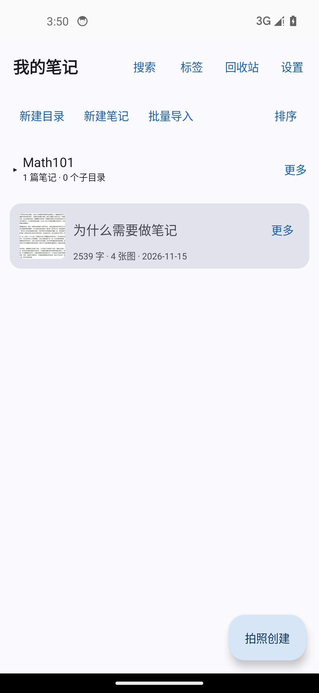
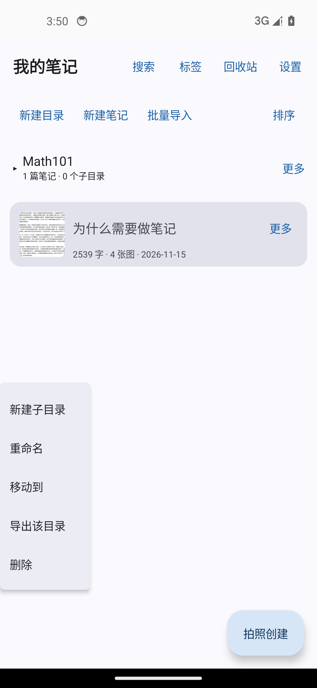
目录的更多菜单提供四项操作：新建子目录、重命名、移动到、删除。删除时会提示影响面（子目录数与笔记数），确认后整棵子树进入回收站，30 天内可恢复。列表中的笔记卡片左侧显示首图缩略图，可以看到缩略图的内容就是对应页面的正文排版，排满文字的段落页，而不是统一的占位图标，说明缩略图确实取自各自的页面图片。
取图是整条链路的起点，界面设计上把拍摄与相册做成并列的两个入口：取景区占满屏幕，顶部叠加已选张数与从相册导入，底部是相册 / 快门 / 检查三栏。这样的布局保证即使用户拒绝相机权限，相册入口依然可用。这一点在早期版本中曾经出错，权限被拒时整个下半部分被提前返回截断，用户从相册选完图片后界面毫无变化，看起来像功能失效。
图 4-2(a) 展示的是相册选取完成后的状态：三份素材以缩略图排成一行，每张带删除按钮，底部实时显示已选张数（3/20）与已选 3 张。缩略图条的作用是让用户在提交前就能确认选错了哪张、顺序是否合适，而不是等到转换完成才发现问题，对于多页材料，页序直接决定正文段落的先后，这一步的确认成本远低于事后返工。
需要说明本节截图的环境：图片取自 Android 模拟器，其虚拟摄像头只能输出内置的虚拟场景，无法对准真实的纸质材料，因此这里只保留缩略图条与操作区，不展示取景画面。这不影响链路验证，测试素材通过从相册导入进入的，与取景拍摄是同一套预处理与上传管线，压缩、摘要、直传、建单等后续环节完全共用，差别仅在于图片来源；真机上的取景画面即为镜头所见的纸质页面。
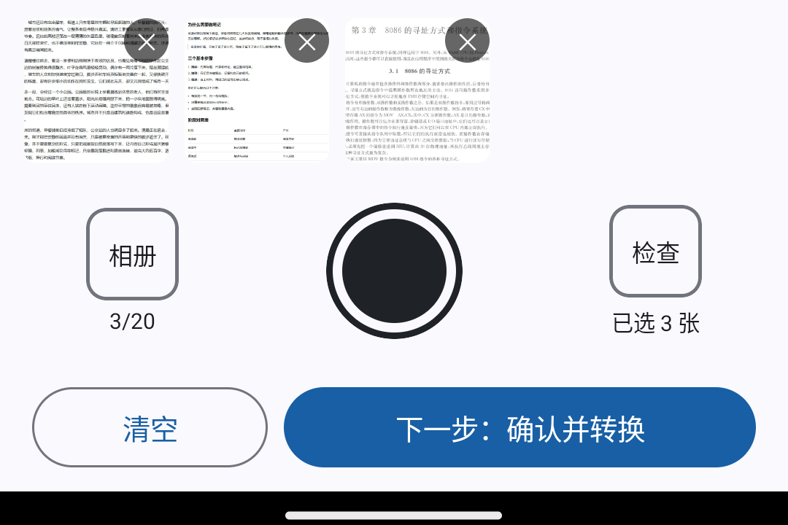
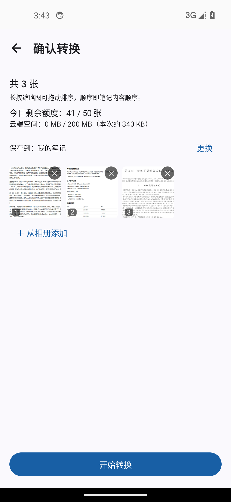
确认页是提交前的最后一道校验，它展示本次图片数量、今日剩余额度、云端空间占用与预计增量、目标目录，并支持长按缩略图拖拽调整顺序、单张删除、从相册继续补充。图中显示的今日剩余额度 41 / 50 张云端空间 0 MB / 200 MB（本次约 340 KB）都来自服务端的额度接口，若额度或空间不足，提交按钮会被禁用并给出具体原因。
点击开始转换后，客户端先批量申请上传会话，再以并发 2 张的方式直传对象存储，全部确认后创建笔记并触发转换任务。任务执行期间界面展示正在识别第 N / M 页的进度，完成后自动跳转到编辑器。正文由服务端按页生成：每个页面生成一个二级标题，页面内的识别文本以段落呈现，页与页之间用分割线隔开。图中这篇由三张图片生成的笔记，正文共 1874 个字符、3 张图，标题为什么需要做笔记取自第二页文档的主标题。
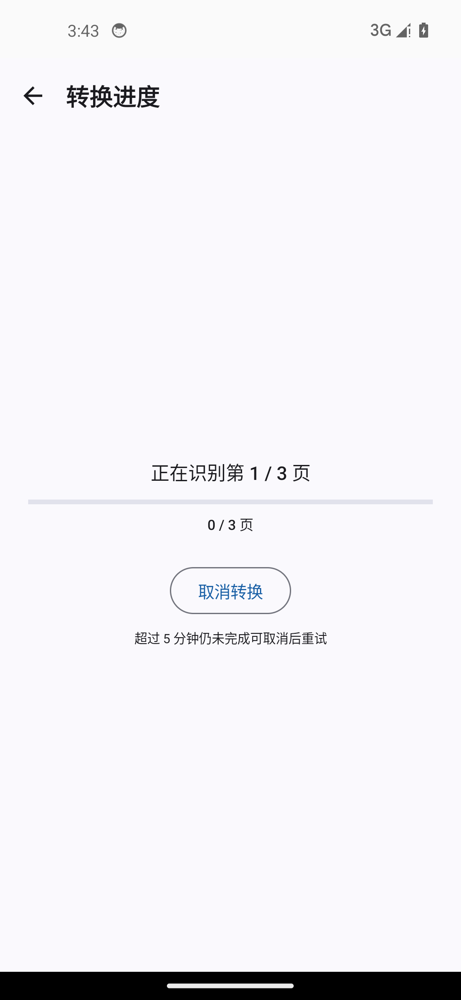
编辑器顶部显示标题输入框、字数统计、图片数与保存状态，中部是标签区与工具栏（撤销、重做、H1 至 H3、加粗等，可横向滚动），下部是正文编辑区。切换到预览后，井号标题被渲染为加粗大字、分割线渲染为横线、加粗标记被移除，Markdown 语法不再以源码形式出现。原文对照视图按页展示上传的原图，支持左右翻页与双指缩放，用户可以逐页核对识别是否准确。这是我们对AI 可能识别不准这一风险的直接应对：不承诺百分之百准确，但保证用户能低成本核对。
标签页支持新建、重命名与删除，每个标签后面标注关联的笔记数；给笔记打标签时支持输入联想与即时新建，单篇上限 10 个。搜索页提供关键词输入、目录筛选与标签筛选，输入停止 300 毫秒后自动检索，无关键词时展示最近 10 条搜索历史。版本历史按保存来源分组展示，可只读预览任意版本并恢复到该版本。
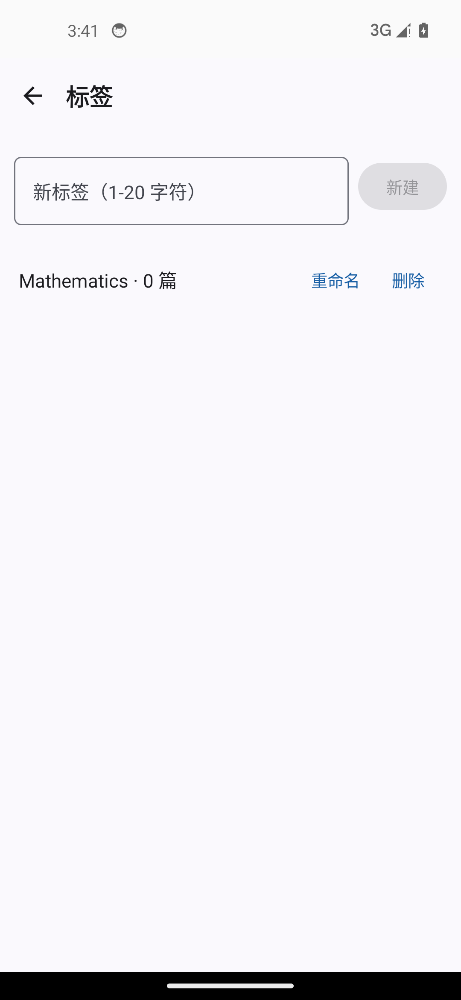
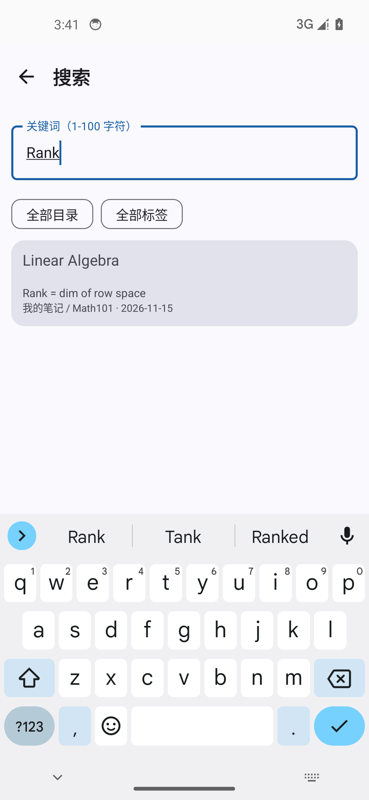
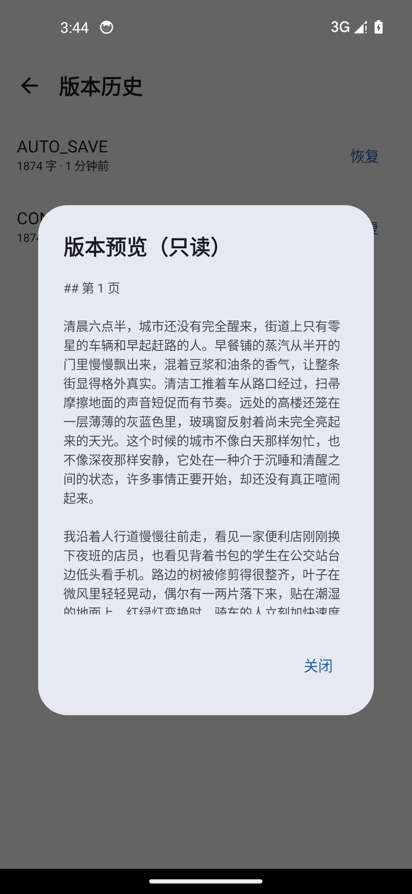
输出能力包括导出与分享。目录导出以异步任务执行，完成后给出一个有效期一小时的下载链接，支持复制或直接打开；实测导出的 ZIP 内部结构为目录名/笔记标题.md，文件内容与编辑器中的正文完全一致。分享会生成不可猜测的链接，匿名用户可通过浏览器直接阅读渲染后的页面，也可以 JSON 形式供程序消费，关闭分享后链接立即失效。
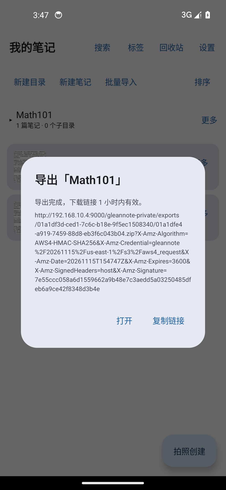
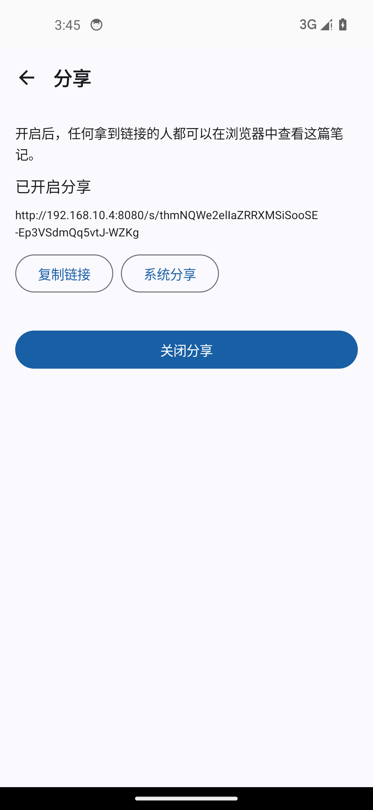
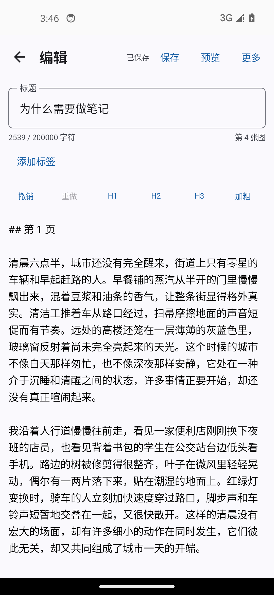
批量导入支持每图一篇与合并一篇两种模式，逐篇展示状态（待处理、转换中、成功、失败），失败项可以单篇重试，也可以取消尚未开始的项。追加页面用于给已有笔记补充新内容，转换结果只写入正文末尾而不覆盖原有内容，实测给一篇三页的笔记追加一页后，正文字符数由 1874 增至 2539，页数由 3 增至 4，原有正文未受影响。
删除笔记后进入回收站，界面展示删除内容的名称、类型、原路径与剩余保留天数（30 天），支持恢复与彻底删除。恢复后列表即时刷新，条目从回收站消失，早期版本因为本地表只做 upsert 不做删除，恢复后条目会残留在界面上，这一缺陷已修复。设置页集中展示账号信息（昵称、脱敏邮箱）、额度与云端空间、额度重置时间、待同步条数、本地缓存大小，并提供清理缓存、通知开关、用户协议与隐私政策、意见反馈、退出登录与注销账号。
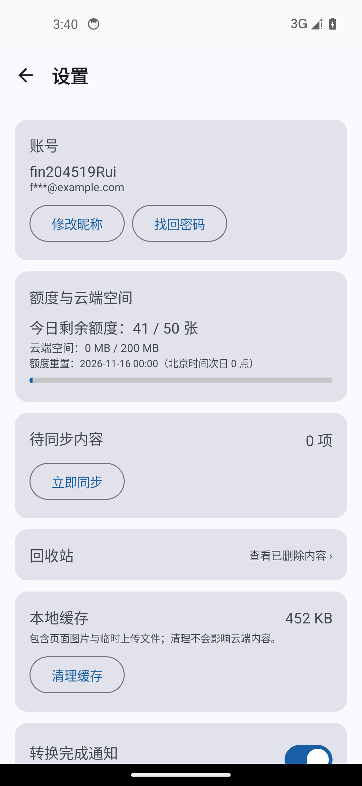
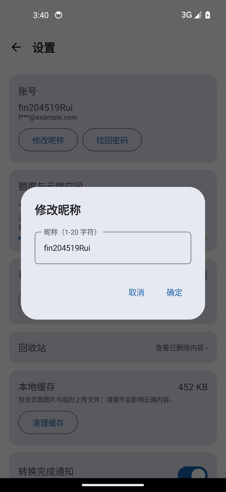
设置页中的额度重置：2026-11-16 00:00（北京时间次日 0 点）体现了时间展示的统一口径：服务端一律返回 UTC，客户端在展示层统一转为北京时间。这一处曾经直接显示 ISO 原文（形如 2026-11-15T12:54:08Z），既不直观也不符合需求，后来抽出统一的时间格式化工具后才修正。
测试按三层组织，越靠下越自动化、越靠上越接近真实使用。第一层是纯 JVM 单元测试，覆盖不依赖 Android 框架的逻辑：输入校验、Problem 解析、URL 构造、Markdown 分块、列表重排、时间格式化。这一层跑得最快，也是回归时最先执行的部分。第二层是接口级端到端测试，用脚本直接调用服务端，覆盖全部 58 个端点与横切约定（幂等键、分页终止、乐观锁、预签名直传、同步游标、错误码）。第三层是界面级走查，在模拟器上用 uiautomator 驱动真实应用，逐条验证用户可感知的链路。
| 层次 | 规模 | 覆盖内容 | 执行方式 |
|---|---|---|---|
| 单元测试 | 38 例 | 校验、错误映射、URL、Markdown、排序、时间 | gradle testDebugUnitTest，纯 JVM，秒级完成 |
| 接口端到端 | 77 断言 | 58 个端点 + 幂等 / 分页 / 乐观锁 / 直传 / 同步 | python api_e2e.py，脚本化可复跑 |
| 界面走查 | 15 条链路 | 注册、取图、转换、编辑、分享、导出、导入等 | 模拟器 + uiautomator 脚本，配合人工核对截图 |
转换链路的测试需要一个前提：有可供识别的图片。真实场景中的输入大致有三类，纯文本的电子版材料、屏幕截图、以及用手机翻拍的书本或讲义段落。这三类输入的难点并不相同：纯文本考的是段落切分与换行还原，带格式的截图考的是标题层级、列表与表格的识别，翻拍页面则额外引入光照、倾斜与纸张纹理的干扰。为了让测试覆盖这三类形态、同时又能验证页序与多页等逻辑，我们准备了三份真实素材，逐张送入相册后按顺序选取。
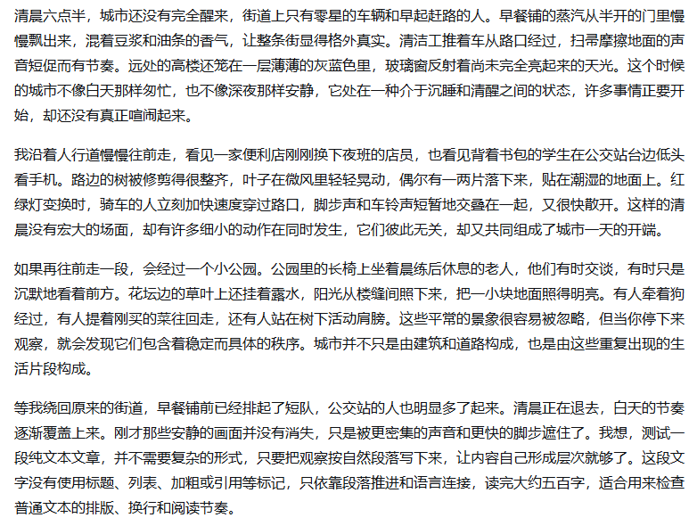
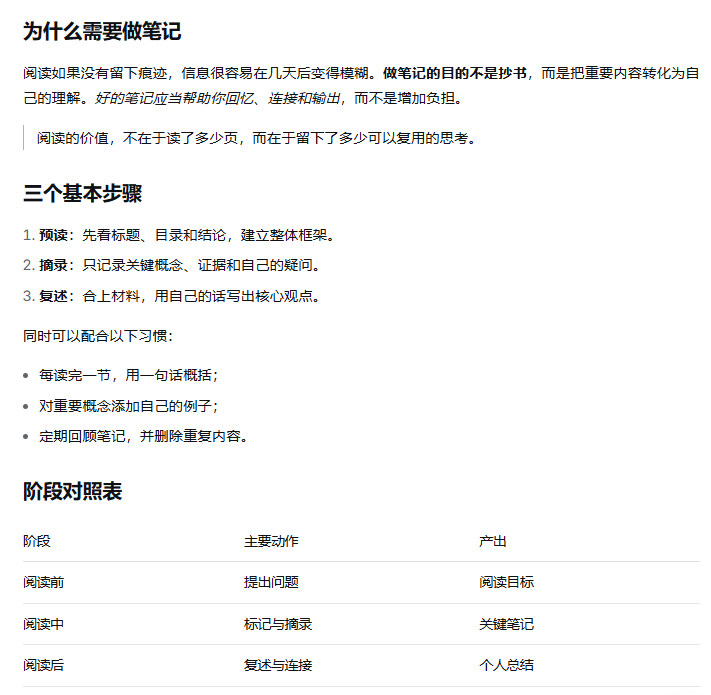
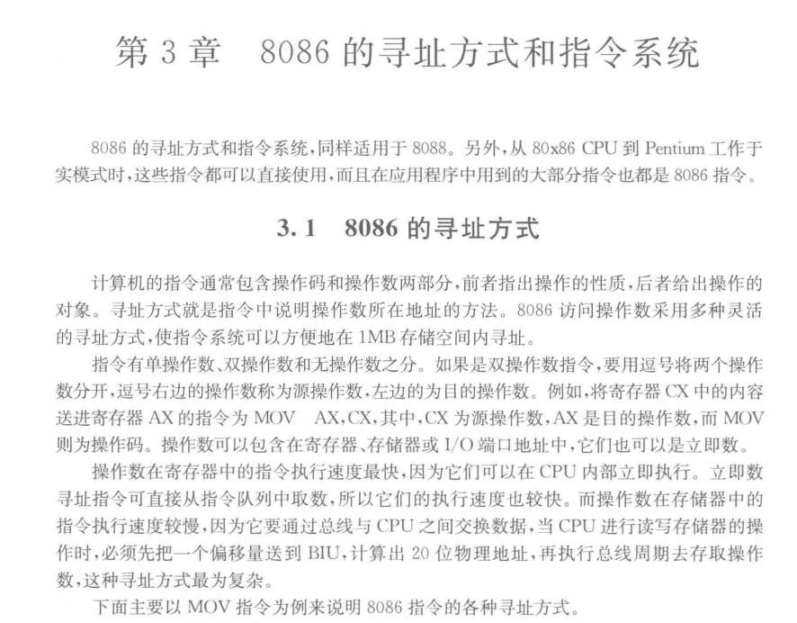
三份素材的内容各有侧重。第一份是一段约五百字的纯文本，通篇只有自然段落，没有标题、列表与强调标记，用来检验模型在无格式线索的条件下能否按段落正确切分，而不是把整页压成一段。第二份是一篇带排版的笔记类文档，包含两级标题、一段引用、一组有序列表、一组无序列表以及一张三列对照表，用来检验模型能否识别出层级关系并还原为 Markdown 结构。第三份是教材页面的翻拍，包含章标题、节标题与多段正文，画面带纸张纹理与轻微的明暗不均，用来检验版面分析在非理想拍摄条件下的稳定性。三份素材的页面尺寸与长宽比并不一致，这也顺带验证了预处理阶段的等比缩放不会破坏版面。测试时把它们推送到模拟器相册，再通过应用内的相册入口逐张选取，从而让相册导入这条路径也得到真实验证，而不是绕过界面直接调接口。
除图片素材外，服务端的视觉模型在开发环境使用 fake 实现。fake 会把图片中的可读文字按页组织成 Markdown 返回，因此转换结果虽然简单，却完整地流经了上传—确认—建单—任务—结算—回写的全部环节。这样做的目的是把链路是否正确与模型识别得多准两件事分开验证：前者由自动化测试保证，后者属于模型能力，不在课程设计的可控范围内。
三层测试各有对应的代码形态。单元测试用 JUnit 直接断言纯函数的行为，不启动 Android 运行时；接口测试用 Python 脚本按分组收集断言结果；界面测试用 uiautomator 脚本驱动真实应用并截图留证。三者的共同要求是：每条用例都要能在失败时给出哪里不对、期望什么、实际什么，而不是只抛一个布尔值。
下面的片段取自契约测试，它验证的是错误解析这一层：给定一段标准的 Problem+JSON，解析结果中的 code、status、metadata 与 requestId 是否与预期一致；给定一段非 JSON 的错误页（例如网关返回的 HTML），是否能降级为以 HTTP 状态码命名的错误码。之所以专门测试后一种情况，是因为真实环境中网关超时、代理故障返回的往往不是规范的 Problem 体，若不兜底就会出现解析异常导致崩溃的问题。
/* 契约测试：Problem+JSON 解析（API.md 2.8 / 6 章），对应 C-11 未知错误码容忍。 */
class ProblemMapperTest {
private val quotaBody = """
{"type":"https://gleannote.example/problems/quota-exceeded","title":"Daily quota exceeded",
"status":409,"detail":"Requested 12 pages but only 5 remain.","code":"QUOTA_EXCEEDED",
"userMessage":"今日额度剩余 5 张，可减少图片后重试",
"metadata":{"remaining":5,"requested":12,"resetAt":"2026-10-28T16:00:00Z"},
"retryable":false,"requestId":"req_01JB7Q2K9S"}
""".trimIndent()
@Test
fun parses_code_status_and_metadata() {
val error = ProblemMapper.parse(409, quotaBody)
assertEquals("QUOTA_EXCEEDED", error.code)
assertEquals(409, error.status)
assertEquals("5", error.metadata["remaining"])
assertEquals("12", error.metadata["requested"])
assertEquals("req_01JB7Q2K9S", error.requestId)
assertFalse(error.retryable)
}
@Test
fun non_json_body_falls_back_to_http_code() {
val error = ProblemMapper.parse(502, "<html>bad gateway</html>", headerRequestId = "req_hdr")
assertEquals("HTTP_502", error.code)
assertEquals("req_hdr", error.requestId)
assertTrue(error.retryable)
}
}
这组用例全部运行在 JVM 上，执行时间不到一秒，因此在每次改动网络层后都会立即重跑。相比之下，接口测试需要服务端就绪、界面测试需要模拟器启动，成本高得多，所以我们把能下沉到单元测试的验证尽量下沉。这也是第 3.2 节把错误解析抽成纯函数的主要动机之一。
最终一轮测试在服务端就绪、客户端为最新构建的条件下执行，三层结果如下。接口层的 77 项断言全部通过，覆盖了认证、目录、笔记、上传转换、回收站与标签、版本与分享、导出导入、同步与错误处理共十个分组；单元测试 38 例全部通过；界面层的 15 条主链路在模拟器上逐条走通，并留存了截图。
| 层次 | 用例数 | 通过 | 失败 | 说明 |
|---|---|---|---|---|
| 单元测试 | 38 | 38 | 0 | 校验 8、Markdown 4、错误映射 6、URL 4、契约 10、排序 6 |
| 接口端到端 | 77 | 77 | 0 | 覆盖 58 个端点与全部横切约定 |
| 界面走查 | 15 | 15 | 0 | 注册→取图→转换→编辑→预览→原文→分享→导出→版本→标签→搜索→回收站→设置→导入→追加 |
核心可观察结果已通过服务端侧交叉验证：界面上传三份素材后，服务端返回的笔记正文按页组织，第 1 页对应纯文本素材的四个自然段，第 2 页对应带格式文档的标题、引用、列表与表格，第 3 页对应教材页面；整篇字符数 1874、页数 3、状态 NORMAL，与界面显示一致。原文对照视图中可以正确看到三张原图（段落页、文档页、教材页），说明图片确实写入了对象存储且签名地址可被客户端访问。分享链接在宿主机侧验证，JSON 接口返回标题与正文，HTML 页面返回 200 且标题正确，证明公开访问链路可用。
测试过程中共发现并修复 8 个缺陷，其中 4 个属于数据一致性类（本地缓存与服务端不一致）、2 个属于状态判断类（默认值与真实值混淆）、1 个属于手势冲突类、1 个属于展示口径类。这些缺陷有一个共同特点：都不是编译期能发现的，也不在快乐路径上，只有真正把应用跑起来、按真实操作顺序走一遍才会暴露。这也说明为什么我们坚持在模拟器上做完整走查，而不是只依赖单元测试与接口测试。
| 编号 | 现象 | 根因 | 修复方式 |
|---|---|---|---|
| D-01 | 已登录用户冷启动被送去登录页 | 启动页用 false 作为登录态初始值，异步读取尚未完成即跳转 | 初始值改为未知，读到真实值再跳转 |
| D-02 | 回收站恢复后条目仍显示 | 本地回收站表只 upsert，恢复后旧行残留 | 新增整体替换方法，事务内先清空再写入 |
| D-03 | 并发 401 可能刷新多次，导致设备被踢下线 | 检查刷新任务与创建刷新任务不在同一临界区 | 三者放进同一互斥区，其余请求等待复用 |
| D-04 | 服务端跳过验证码时客户端无法注册 | 注册按钮强制要求验证码非空 | 去掉本地拦截，验证码交由服务端裁决 |
| D-05 | 目录卡片笔记数长期为 0 | 进入目录只刷新笔记，未刷新子目录 | 进入目录时同时刷新子目录计数 |
| D-06 | 删除目录后列表仍显示 | 本地目录表只 upsert，从不删除 | 按父级裁剪后写入，删除成功后同步移除本地行 |
| D-07 | 无相机权限时从相册选完图片界面无变化 | 权限分支提前返回，截断了缩略图条与下一步按钮 | 权限说明改为普通卡片，相册做成常驻入口 |
| D-08 | 版本历史与设置页显示 UTC 原文 | 直接展示服务端返回的 ISO 字符串 | 抽出统一时间格式化工具，展示层转北京时间 |
其中 D-07 的排查过程值得一提。现象是相册导入不工作，但代码里相册入口确实存在、选择器也确实能打开。真正的问题在于权限被拒时，界面渲染到一个提前返回的分支就结束了，后面的缩略图条、下一步按钮都没有被创建；用户选完图片后数据其实已经写进了会话，只是界面上没有任何地方能体现出来。修复时我们没有简单地在权限分支里补几个组件，而是重新组织了整个页面的结构：把权限说明降级为一块普通内容，让相册与拍照成为并列入口，这样即使相机不可用，整条相册链路也是完整的。这个例子说明，有些缺陷的表面现象与根因相隔很远，只看代码很难发现，必须还原用户的实际操作路径。
项目开发过程中用了 AI 编程助手，从梳理需求到写代码、从查缺陷到写文档，它都参与过。这章记录我们怎么用的、写了哪些提示词、效果如何，也包括它在什么地方帮了忙、在什么地方给出了看着合理其实是错的方案。失败案例也写进来，因为只讲成功经验没什么参考价值，读者没法据此判断什么时候该信它、什么时候该自己动手。
我们把 AI 的用途归纳为四类，每类的期望与验证方式都不同。第一类是结构化整理：把产品需求文档、服务端接口文档转化为客户端可执行的任务清单与规格表。这类工作的特点是输入明确、输出可校验，AI 的优势在于不遗漏条目、编号一致，人只需要抽查。第二类是代码生成：按模块生成 Kotlin 与 Go 实现。这类工作必须配合编译与测试，因为生成的代码在语法层面通常正确，在语义层面却常有偏差。第三类是问题诊断：把编译错误、崩溃日志、异常现象交给 AI 分析根因。这类工作 AI 表现不稳定，对现象与根因相隔较远的问题容易给出错误假设。第四类是文档撰写：生成架构文档、测试报告与本报告。这类工作需要人提供事实，AI 负责组织语言与保持格式一致。
与之对应，我们划定了三条边界。其一，AI 不接触真实凭据：令牌、密码、验证码、数据库连接串一律不进入提示词，需要示例时使用占位值。其二，AI 的产出必须经过可执行验证：代码要能编译、测试要能跑通、文档中的数字要能从代码或日志中查到，未经证实的结论不写进交付物。其三，架构决策由人做：模块如何划分、状态放在哪里、失败如何恢复，这些判断依赖对项目约束的理解，AI 可以提供选项但不应替我们决定。实践中最有用的是它把选项列全，迫使我们把取舍想清楚，而不是它给出的方案本身。
| 场景 | 典型任务 | AI 承担的部分 | 人工验证方式 |
|---|---|---|---|
| 结构化整理 | PRD 转任务级 WBS、接口转端点索引 | 条目拆解、编号编排、交叉引用 | 抽查条目是否覆盖原文，编号是否连续 |
| 代码生成 | 网络层、数据层、仓库、界面、服务端用例 | 按契约生成实现与注释 | 编译通过 + 单测通过 + 模拟器实跑 |
| 问题诊断 | 编译错误、运行时缺陷、网络不通 | 提出假设与排查步骤 | 逐条验证假设，不接受未验证结论 |
| 测试构造 | E2E 脚本、断言设计、缺陷复现步骤 | 脚本骨架与断言覆盖 | 跑通并核对失败原因是否指向真实问题 |
| 文档撰写 | 架构文档、测试报告、本报告 | 组织结构、语言润色、格式统一 | 数字回溯到代码或日志，截图来自真实运行 |
提示词的质量直接决定产出质量。我们在实践中总结出三条经验：一是给出边界而非给出步骤，明确只能改哪几个文件、禁止改什么，比逐步指挥更有效；二是要求可验证的产物，例如必须能通过编译每条断言要有失败原因，能显著减少空泛输出；三是把已有事实写进提示词，例如服务端版本、端点数量、已知的环境坑，避免 AI 基于过时假设作答。下面摘录四段实际使用的提示词（为篇幅做了压缩，但保留了关键约束）。
提示词一（架构文档）：读取根目录 PRD v1.2 与 Server/docs 下的 API.md、ARCHITECTURE.md、openapi.yaml，为 Android 客户端编写架构总纲。要求：① 契约基线一节必须逐条覆盖令牌轮换、幂等键、revision 乐观锁、AIP 分页、Problem 按 code 分支、预签名三步上传、同步游标；② 模块划分给出 core 与 feature 两级并写明依赖规则；③ 所有具体第三方库标注为建议，因为 PRD 不约束实现方式；④ 每个数值标注出处章节。不要写代码。
提示词二（网络层实现）：实现 core/network 下的两个文件：TokenStore 与 OkHttpApiClient。唯一契约是 core/contract/Contracts.kt 中的 ApiClient 接口，禁止修改或重命名其中任何成员。必须实现：Problem+JSON 解析并按 code 分支（不解析 detail）、401 时刷新令牌且并发请求只刷新一次、预签名 PUT 不得改动 headers 中的 Content-Type、网络异常映射为可重试错误。日志只记录方法、路径、状态码与请求 ID，禁止记录令牌与验证码。代码必须可编译。
提示词三（端到端测试）：编写 Python 脚本，对 http://192.168.10.4:8080 的全部端点做端到端断言。要求：① 每条断言包含分组、描述、通过条件与失败详情，失败详情要能区分服务端问题与脚本问题；② 覆盖幂等键、分页终止条件、乐观锁冲突、预签名直传、同步游标推进；③ 网络异常不得中断脚本，映射为可识别的错误；④ 输出 JSON 结果便于比对。不要伪造响应。
提示词四（缺陷诊断）：模拟器上从相册选完图片后，拍摄页仍停在相机未授权说明页，缩略图条和下一步按钮都不出现，但代码里相册入口存在且选择器能打开。请给出排查方向，不要直接改代码；先说明可能的原因排序，再给出验证每个原因的最小实验。
第四段提示词对应的正是 D-07 缺陷。值得说明的是，AI 最初给出的假设是选择器回调未触发，方向是错的；当我们把权限分支里有一处提前返回这一事实补充进去后，它才定位到真正原因。这个过程印证了前面的判断：AI 擅长在给定事实下推理，不擅长凭空还原现场。
为了让上面的描述更具体，这里给出一个真实案例。在实现令牌刷新单飞时，AI 的初版把检查是否有刷新在途放在锁外、创建刷新任务放在锁内，逻辑读起来通顺，但存在一个极短的竞态窗口。我们用三个并发请求同时触发 401 的用例把它测了出来，随后要求 AI 在给定并发窗口这一事实的前提下重写，得到修正版。
/* ---------- 初版（存在问题）：检查与创建分处锁内外 ---------- */
private suspend fun refreshAccessToken(): String? {
if (refreshTask == null) { // 检查
refreshMutex.withLock {
refreshTask = scope.async { doRefresh() } // 创建
}
}
return refreshTask?.await()
}
// 两个线程可能同时通过第 2 行的判空，各创建一个刷新任务；
// 第二次刷新携带的是已被轮换的旧令牌，服务端判定复用并吊销会话。
/* ---------- 修正版：判断、创建、登记在同一临界区 ---------- */
private suspend fun refreshAccessToken(): String? {
val task = refreshMutex.withLock {
refreshTask ?: scope.async { doRefresh() }.also { refreshTask = it }
}
return try {
task.await()
} finally {
refreshMutex.withLock { if (refreshTask === task) refreshTask = null }
}
}
这段对比说明了我们与 AI 协作的基本模式：让它快速给出候选，再由测试判定对错，而不是指望它一次写对。初版代码本身没有语法错误，静态检查也不会报警，只有并发用例能暴露问题；而一旦我们把问题是什么讲清楚，它给出的修正方案是准确的。整个往返大约十分钟，比我们自己从零推导要快，但前提是我们先想明白了要测什么。
从结果看，AI 在本项目中的贡献主要集中在三个方面。其一是消除机械劳动：58 个端点的封装、20 张本地表的字段字典、104 条任务的编号与追溯矩阵，这些工作量大但创造性低，交给 AI 后人力可以集中在设计与验证上。其二是保持一致性：多份文档之间的术语、编号、口径很容易漂移，AI 在统一约束下产出时反而比多人手写更一致。其三是加速排错：编译错误与明显的逻辑漏洞，AI 往往能一次指出，省去翻文档的时间。
但它的问题同样明显，我们记录了四类典型失败。第一类是看似合理的错误方案：早期让 AI 生成启动页的登录态判断，它写成了用布尔默认值 false 表示未登录，语法无误、逻辑自洽，却忽略了异步读取的时序，直接导致冷启动误判。第二类是过度简化：让 AI 实现列表缓存时，它选择了 upsert，理由是有则更新无则插入，听起来合理，但完全没有考虑删除场景，最终导致幽灵数据。第三类是幻觉式的确定：询问某个依赖的 Maven 坐标时，它给出了一个不存在的 artifact，构建直接失败。第四类是对环境的想当然：它默认模拟器能直接访问局域网，而实际环境里 NAT 出网是坏的。
这四类失败的共同点是：错误不在语法层，而在对约束的理解层。语法错误编译器会拦，逻辑错误只有测试能拦，而对环境与业务约束的误解，只有人把事实摆出来才能纠正。因此我们最终形成的工作方式是：让 AI 做有明确验收标准的部分，人负责定义验收标准与验证结果。具体到本项目，代码必须编译、测试必须跑通、界面必须实拍、文档数字必须可回溯。这四条硬性要求，是把 AI 产出转化为可信交付物的关键。
还有一个意外收获。当我们要求 AI 解释为什么刷新单飞必须把判断和创建放进同一临界区时，它给出的分析帮助我们确认了一个此前只是感觉不对的并发窗口，随后我们据此补了一个三并发 401 的单元测试，断言刷新只发生一次。这类用 AI 做对手的用法，比让它直接写代码更有价值。它迫使我们把模糊的直觉表述成可验证的命题。
（以下四份心得由小组成员分别撰写，按分工排序。）
我负责的是客户端最底层、也最不显眼的部分，包括接口契约、网络传输和本地数据。刚接手时我以为这部分最难的是把接口调通，做完之后才发现，真正难的是接口不通的时候系统还能正常工作。这个想法来自一次很普通的测试：我把模拟器的网络断开，再打开应用，界面一片空白，还弹出网络异常提示。那一刻我意识到，自己写的代码全都建立在网络总是可用这个假设上，而这个假设在手机上根本不成立。
于是我把本地数据库从缓存提升为界面的唯一数据源。这个改动听起来只是换了个说法，实际影响很大。所有界面不再直接消费网络返回的数据，而是观察数据库的变化；网络请求的职责变成把结果写进数据库，写完之后界面自然就更新了。这样做最直接的好处是离线可用，间接的好处是界面逻辑变简单了，不用再为加载中、加载失败、有缓存但过期这三种情况各写一套分支，只需要一套渲染逻辑加一个同步状态条。改完之后，断网状态下应用依然可以浏览、编辑和删除，联网后自动补上同步。那种它终于像一个正常移动应用的感觉，是我在这个项目里最有成就感的时刻。
第二个让我印象很深的问题是删除不掉的目录。测试时我删了一个目录，界面上它还在，刷新一下还在，退出重进居然还在。我一度怀疑是服务端没有删除，用命令行一查，服务端早就把它放进回收站了。问题出在我自己写的写入逻辑上：列表刷新时，我把服务端返回的条目逐条写进本地，服务端已经没有的条目，本地自然就留了下来。这个问题很典型，它在任何一次正常操作中都不会出现，只有先有、后删、再刷新这个顺序才会暴露。修复时我没有只补一个删除调用，而是把列表写入的语义整体改成先按父级裁剪、再写入，并且放进同一个事务。改完之后，回收站恢复后条目残留的问题也一起消失了，因为它们是同一个原因造成的。
第三个收获和并发有关。令牌刷新的逻辑，我第一版写成了先检查有没有正在进行的刷新，没有就发起一个。这段代码在单线程下完全正确，在多线程下却有一个极短的窗口：两个请求同时检查，都发现没有正在进行的刷新，于是各自发起了一个。测试时我特意写了三个请求同时触发令牌过期的用例，要求刷新接口只被调用一次，结果第一次运行就失败了。把检查、创建和登记这三个动作收进同一个互斥区之后才通过。这件事让我明白，为什么很多并发问题在开发机上永远复现不了，因为它们需要精确的执行顺序，而顺序只有在压力下才会出现。
最后说一点关于 AI 的体会。我最初很依赖它生成代码，后来发现它最容易犯的错，恰恰是我自己也会犯的错，就是忽略异常路径。它写的写入逻辑和我写的一样合理，因为它和我一样只想着正常流程。所以后来我改变了用法，不再让它实现一个功能，而是让它列出这个功能可能失败的所有方式，然后我逐条决定怎么处理。这个用法下它的价值大得多，因为它不会累，可以把二十种失败情形一次性列全，而人往往会偷懒只想三种。
我负责客户端的取图和图片处理。这块是我一开始最轻视的，当时想法很简单，调个系统相机拍张照，拿到图片上传，能有多难。真正做起来才发现，从用户按下快门到图片变成可以上传的字节，中间隔着权限、预览、格式、方向、体积、内存和线程七个问题，每一个都能让功能不可用。
第一个教训是能用和好用的差距。最初我用系统相机，一行代码就能拍照，测试也通过了。但当我把应用给同学试用，他拍完一张想再拍一张，必须等相机应用退出、回到我的界面、再点一次拍照，来回切换三次就烦了。这时我才意识到，需求里写的支持连续拍摄不是一句客套话，它决定的是用户会不会继续用下去。后来改用 CameraX 在应用内做取景，快门连拍、缩略图即时出现，体验完全是两回事。这让我明白，需求文档里那些看起来像形容词的描述，比如连续、流畅、即时，背后往往是很具体的交互设计，不能当成可选项。
第二个教训是手势冲突。原文对照页需要左右滑动翻页，也需要双指缩放，我用 Pager 做翻页，用 transformable 做缩放，结果页面完全滑不动。查了很久，试过调整层级，也试过换翻页实现，都没用。最后用最笨的办法，在每一层加日志，看事件被谁消费了，才发现 transformable 把单指拖动也拦截了。解决办法是自己处理指针事件，只有检测到两根手指才消费手势。这件事让我对框架有了新的理解：它帮你做的事越多，出问题时你越难知道发生了什么，所以至少要弄懂它的核心机制。
第三个教训关于内存。图片处理最初我写得很直接，解码成位图、缩放、压缩、写文件。单张测试没问题，连续拍五张之后应用开始卡，第八张直接崩溃。原因是中间产生的位图没有及时回收，而且我把一部分工作放在了主线程。改成全程在 IO 线程执行、每步用完立即回收、并且用流式写入之后才稳定下来。这让我第一次真切体会到移动设备的资源是有限的，用桌面程序写惯了的人很容易忘记这一点。
还有一个让我印象很深的小问题，预览画面四周有白边。我以为是布局问题，调了半天间距和尺寸都没用。后来发现是预览控件的实现模式导致的，在某种模式下画面比例和容器不一致时会留下边框，换成兼容模式并显式设置铺满之后才正常。这种问题没有任何文档会提前告诉你，只能靠自己盯着屏幕一点一点试。
如果说这个项目让我学到最重要的一件事，那就是要尽早把东西跑起来给人看。我写的很多问题在代码层面都是正确的，只有真的在屏幕上操作才会暴露。后来我养成了一个习惯，每完成一个小功能就装到模拟器上手动走一遍，哪怕只是点几下。这个习惯让我在后期少返工了很多次。
我负责服务端的转换链路和分享功能。和客户端的界面工作相比，服务端的特点是看不见，用户只看到一个进度条，背后是任务队列、状态机、对象存储签名、模型调用和额度结算五件事必须严丝合缝。任何一环出问题，用户看到的都是同一句转换失败，所以我的大部分精力花在怎么让失败可归因上。
最核心的设计是任务的状态机。转换任务有五个状态，排队、执行中、成功、失败和已取消。看起来简单，但要保证同一个任务不会被两个后台进程同时处理，就必须让状态切换是原子的。我的做法是在事务里做带条件的更新，只有当前状态是排队时才更新为执行中，然后看受影响的行数，如果是零就说明已经被别人抢走，直接退出。这个做法不依赖分布式锁，也不需要额外的协调服务，靠数据库的行级锁就能保证。写完这段之后我特意做了重复投递的测试，同一个任务投递五次，只有一次真正执行，其余四次都安静退出。
第二个重点是失败归因。模型可能因为很多原因失败，服务不可用、图片打不开、内容不支持、超时、返回空结果。如果把这些原始错误直接传给客户端，用户看到的是英文的超时提示，既不知道该等还是该改，也没法向客服描述问题。所以我把所有异常映射成有限的几个失败码，每个失败码对应一句人话：模型不可用时提示当前使用人数较多请稍后重试，图片不清晰时建议重拍后重试，内容不支持时说明暂不支持转换。这个映射表看起来是小事，但它决定了用户在失败时是再试一次还是直接放弃。
第三个是额度结算的时机。最初的实现是在创建任务时就扣额度，结果用户遇到模型故障、任务失败，额度却已经被扣掉了，体验很差。改成任务进入终态后再结算，成功才扣，失败自动返还，问题解决。这件事让我理解了一个原则，资源的扣减应该发生在价值交付之后，而不是开始尝试之时。这个原则后来也影响了我对客户端上传流程的看法，先传完再建单，而不是先建单再传。
分享功能看起来简单，实际有几个细节要注意。链接里的随机串必须不可猜测，所以用加密安全的随机数而不是普通随机。关闭分享后必须立即失效，所以每次访问都要校验分享记录的状态，而不是只验证随机串。公开页面要做转义，因为笔记正文是用户输入的 Markdown，直接拼进网页会有注入风险。这几点都不难，但漏掉任何一个都是安全问题。
关于 AI 的使用，我在服务端这边主要用它做两件事，一是生成测试数据和边界用例，比如上传零张、上传二十一张、摘要长度不对这类情况，它列得比我全；二是帮我读别人写的代码，比如某个中间件到底按什么顺序执行。但涉及状态机和事务的地方我不太敢让它直接写，因为它倾向于写出看起来对的代码，而并发正确性恰恰是看起来对和真的对差别最大的地方。有一次它给我的领取逻辑是先查询再更新，两条语句分开，在我这个场景里就是典型的竞态。所以我的经验是，可以让它写业务逻辑，但并发和事务必须自己过一遍。
我负责测试和文档。刚开始我以为这是个收尾工作，代码写完了，跑一跑，把结果记下来。做了两周之后我发现，测试其实是这个项目里最像侦探的部分，因为你要面对的全是明明应该正常却偏偏不正常的情况，而线索往往只有一行日志或者一张截图。
我印象最深的是那个相册导入不工作的问题。同学反馈说从相册选完图片，界面什么都没发生。我先看代码，相册入口在，选择器能打开，回调里也确实往会话里加了图片，逻辑上看不出问题。于是我改成在模拟器上一步步操作，每步截图。截到第三步时发现了关键线索，界面还停在相机未授权那一页，而那一页的布局里根本没有缩略图条。回头再看代码，权限分支里有一个提前返回，把后面的内容全截断了。数据其实已经写进去了，只是没有任何地方显示它。这个问题让我学到一个方法，当代码看起来对但现象不对时，不要继续读代码，去还原用户的操作路径，看界面在每一步到底渲染了什么。
第二个让我成长的是测试脚本本身也会骗人。第一次跑端到端脚本，七十二项检查过了六十六项，我以为是客户端有六个问题。逐条核对后发现，其中三项是脚本自己写错了，有的漏传了幂等键，有的把服务端省略字段误判为字段缺失，还有一项把端口号也算进了主机名比较。这件事让我养成了一个习惯，任何失败先怀疑测试，再怀疑被测对象。为此我在脚本里给每条检查都写了明确的失败详情，让脚本问题和真正的程序问题在输出上就能区分开。改完之后重跑，七十七项全过，其中真正属于服务端的问题只有一个。
第三个体会是关于数字要能追溯。写测试报告时，我一度凭印象写了接口全部通过、性能良好这样的结论。后来被要求每个数字给出处，才发现自己有些数字是从早期版本的日志里抄的，早已过期。于是我改成所有数字都从当次运行的结果文件里取，文档里凡是出现数字的地方都注明来源。这个过程很枯燥，但它让我意识到，报告的价值不在于写得多好看，而在于每一个结论都能被复核。
文档方面我最大的收获是结构先于内容。一开始我按时间顺序记录做了什么，写出来像流水账。后来改成按需求、设计、实现、验证来组织，每部分先给结论再给依据，可读性好了很多。我也用了 AI 帮忙组织语言和检查格式一致性，比如表格列数、编号是否连续、交叉引用是否有效，但事实部分一律自己核对，因为它很擅长把不确定的事情写得像确定的。
最后说一点感受。测试这份工作大部分时间是不被看见的，测试通过的时候没有人会注意到你，只有出问题的时候大家才会想起你。但正是这些没人注意的检查，让这个项目在最后演示时能够稳定地跑完整条链路。我觉得这种让事情不出问题的价值，和让事情能跑起来的价值同样重要，只是它更安静一些。